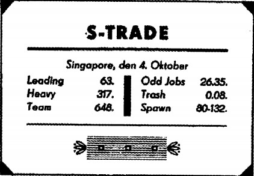
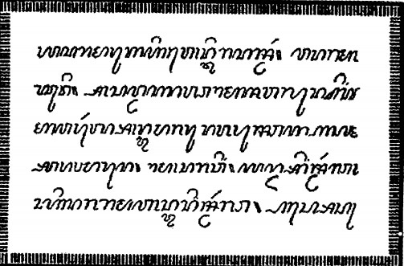
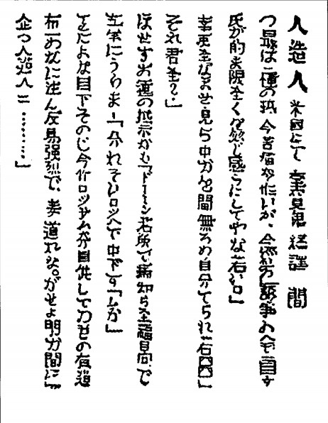

SA GIÔNG SỬ LƯỢC (1)
Trong kỷ nguyên lịch sử mà G.H. Bondy đã khởi xướng tại đại hội đáng nhớ của Tập đoàn Pacific Export Association, khi ông đưa ra những lời tiên tri về sự ra đời của một thế giới Thiên Đường (2) , chúng ta không còn đánh giá các sự kiện theo mốc thập niên hay thế kỷ nữa như lịch sử thế giới trước đây vẫn làm, mà phải tính theo mốc ba tháng một, dựa theo các thống kê kinh tế hàng quý (3) . Trong giai đoạn hiện tại, có thể nói là lịch sử đang được sản xuất đại trà; đó là lý do tốc độ tiến triển của lịch sử được thúc đẩy nhanh hơn rất nhiều (ước tính gấp năm lần). Ngày nay, chúng ta đơn giản là không thể chờ đợi hàng trăm năm để thấy thế giới chuyển biến tốt hay xấu. Chẳng hạn, việc di cư của nhiều dân tộc vốn thường kéo dài suốt nhiều thê hệ giờ đã có thể hoàn tất trong vòng ba năm khi tận dụng các phương thức giao thông hiện đại có tổ chức, nếu không thì sẽ không thu được lợi nhuận. Tương tự, sự suy tàn của Đế chế La Mã, tiến trình thực dân hóa các châu lục, việc tàn sát dân da đỏ, vân vân, cũng sẽ diễn ra nhanh chóng nếu chúng xảy ra vào ngày nay. Tất cả đều có thể hoàn tất trong một khoảng thời gian nhanh hơn nhiều nếu có sự ủy thác cho những nhà thầu có nguồn vốn mạnh. Bằng cách này, thành công to lớn của Salamander Syndicate và tác động mạnh mẽ của tập đoàn này đối với lịch sử thế giới chắc chắn đã mở đường cho tương lai.*
(1). Xem: G. Kreuzmann, Geschichte der Molche [Lịch sử loài sa giông]. Hans Tietze, Der Molch des XX. Jahrhunderts [Sa giông của thế kỷ XX]. Kurt Wolff, Der Molch und das deutsche Volk [Sa giông và dân tộc Đức]. Sir Herbert Owen, The Salamanders and the British Empire [Sa giông và Đế quốc Anh]. Giovanni Focaja, L’evoluzione degli anfibii durante il Fascismo [Sự tiến hóa của loài sa giông thời phát-xít]. Léon Bonnet, Les Urodèles etla Société des Nations [Loài sa giông và Hội Quốc Liên], S. Madariaga, Las Salamandras y la Civilización [Sa giông và nền văn minh], và các tác giả khác.(NT)
⚝ ✽ ⚝
(2). Xem: Khi loài vật lên ngôi, Phần I, Chương 12. (NT)
⚝ ✽ ⚝
(3). Điều này ta có thể thấy ngay trong mẩu tin đầu tiên cắt từ báo trong bộ sưu tập của ông Povondra:
THỊ TRƯỜNG SA GIÔNG
(CTK) Theo báo cáo mới nhất do Salamander Syndicate công bố cuối quý vừa qua, doanh thu từ sa giông đã tăng 30%. Gần 70 triệu con đã được cung cấp trong giai đoạn này, đặc biệt là ở Nam và Trung Mỹ, Đông Dương và Somalia thuộc địa của Ý. Sắp tới, có nhiều dự án đang được xúc tiến để nạo vét và mở rộng kênh đào Panama, dọn dẹp cảng Guayaquil và đào sâu một số vùng nước nông ở eo biển Torres. Theo những ước tính mới nhất, chỉ riêng các công trình này thôi sẽ cần phải di dời 9 tỷ mét khối đất rắn. Việc xây dựng các hòn đảo để làm các sân bay lớn cho tuyến Madeira-Bermuda, phải đến mùa xuân năm sau mới khởi công. Việc san lấp Quần đảo Mariana, thuộc quyền cai trị của Nhật Bản, vẫn đang tiến triển; cho tới nay 840 mẫu đất mới - gọi là đất xốp - đã được lấp đầy vùng biển giữa hai đảo Tinian và Saipan. Do nhu cầu ngày càng tăng, giá sa giông vẫn rất ổn định ở mức 61 loại “Leading” và 620 loại “Team”. Nguồn cung ứng dồi dào. (NT)
Lịch sử của loài sa giông, ngay từ đầu, đã có đặc điểm là tổ chức tốt và hợp lý, đây là điều đó chính yếu nhưng không hoàn toàn là nhờ công của Salamander Syndicate ; cũng phải nhìn nhận rằng khoa học, lòng nhân từ, giáo dục, báo chí và nhiều yếu tố khác cũng đóng vai trò đáng kể trong sự phát triển và tiến bộ của loài sa giông. Tuy nhiên phải nói là chính Salamander Syndicate , gần như hàng ngày, đã thâu tóm những vùng duyên hải và lục địa mới cho chúng, cho dù có phải vượt qua nhiều trở ngại ngăn cản sự bành trướng này (1) . Các báo cáo hàng quý của tập đoàn này cho thấy rằng sa giông đang dần dần định cư ở nhiều hải cảng Ấn Độ và Trung Hoa ra sao; hàng đoàn sa giông chiếm lĩnh các vùng duyên hải châu Phi và tràn sang châu Mỹ nơi một trại ấp trứng sa giông tân tiến nhất sắp xây dựng ở Vịnh Mexico ra sao; ngoài những làn sóng di trú lớn, những nhóm sa giông nhỏ tiên phong đã được gửi đi thiết lập những điểm định cư mới ra sao. Chẳng hạn, Salamander Syndicate đã gửi một ngàn con sa giông loại thượng hạng làm quà tặng cho Bộ Thủy lợi Waterstaat của Hà Lan, sáu trăm con được tặng cho thành phố Marseilles để dọn dẹp hải cảng cũ, và tương tự ở nhiều nơi khác. Khác với sự phát triển của loài người, sự phân tán và di cư của loài sa giông hoàn toàn được trù hoạch kỹ càng, với quy mô lớn; nếu cứ để mặc cho Tạo Hóa thì chắc chắn phải cần đến hàng nghìn năm; thế nhưng Tạo Hóa thì không, mà cũng chưa bao giờ, liều lĩnh lẫn mưu đồ như ngành công nghiệp và thương mại của con người. Dường như nhu cầu lớn của thị trường đã tác động đến khả năng sinh sản của chính loài lưỡng cư này; lượng nòng nọc của một con sa giông cái đẻ ra đã tăng lên tới con số 150 mỗi năm. Số lượng bị sát hại bởi cá mập cùng các loài cá săn mồi khác đã giảm xuống gần bằng không sau khi lũ sa giông được trang bị súng lục bắn dưới nước cùng với loại đạn có sức công phá lớn để chúng tự vệ (2) .
(1). Những khó khăn này được minh chứng bằng mẩu tin cắt từ một nhật báo không rõ nguồn sau đây:
ANH QUỐC NGĂN CHẶN SA GIÔNG?
(Reuters) Trả lời câu hỏi của Nghị viên J. Leeds thuộc Hạ viện, Sir Samuel Mandeville hôm nay tuyên bố Chính phủ Anh Quốc đã cấm vận chuyển mọi loại sa giông qua kênh đào Suez; ông cũng nói thêm là cấm tuyển dụng bất kỳ con sa giông nào trên mọi bờ biển và vùng biển chủ quyền của Quần đảo Anh. Sir Samuel cho biết lý do áp dụng biện pháp này một phần là vì an ninh của Quần đảo Anh và một phần là tuân thủ những đạo luật cũ vẫn còn hiệu lực liên quan đến việc chống buôn nô lệ.
Trả lời câu hỏi của Thượng nghị sĩ B. Russel, Sir Samuel tuyên bố lập trường này tất nhiên không áp dụng cho các thuộc địa và vùng tự trị thuộc Anh Quốc. (NT)
⚝ ✽ ⚝
(2). Loại súng lục gần như duy nhất dùng cho mục đích này là loại do kỹ sư Mirko Šafránek phát minh ra và được sản xuất ở Nhà máy Vũ khí Brno. (NT)
Sự phát triển số lượng quần chủng quần sa giông tất nhiên không phải ở đâu cũng suôn sẻ; ở một số nơi, các tổ chức bảo thủ đã có nhiều biện pháp bảo hộ ngặt nghèo chống lại việc du nhập các lực lượng lao động mới, xem sa giông là đối thủ cạnh tranh không công bằng với nhân lực (1) ; nhiều tổ chức khác đã bày tỏ nỗi lo sợ rằng loài sa giông, sống nhờ ăn các sinh vật biển nhỏ, sẽ là nguy cơ cho ngành ngư nghiệp; cũng có những phe nhóm cho rằng sa giông sẽ phá hoại các bờ biển và hải đảo khi chúng xây những đập chắn và hầm thông ngầm dưới nước. Thực tế là nhiều người đã lên tiếng cảnh báo việc du nhập loài động vật này; nhưng từ xưa đến nay bất kỳ sự tiến bộ nào cũng đều gặp phải sự chống đối và ngờ vực - trường hợp máy móc công nghiệp trước đây thế nào thì trường hợp sa giông bây giờ cũng thế. Ở nhiều nơi khác, các biểu hiện bất bình khác cũng đã nảy sinh (2) , nhưng nhờ sự ủng hộ đáng kể của báo chí quốc tế - vốn luôn đánh giá cao một cách đúng đắn về tiềm lực kinh doanh khổng lồ đối với loài sa giông cũng như những quảng cáo liên tục đầy hào phóng đi kèm theo - việc du nhập sa giông ở hầu hết các nơi trên thế giới đều được quan tâm chào đón, thậm chí còn hết sức nhiệt tình (3) .
(1). Xem mẩu tin này:
PHONG TRÀO ĐÌNH CÔNG Ở ÚC
(Havas) Lãnh đạo Công đoàn Úc, Harry MacNamara, đã kêu gọi mọi công nhân các hải cảng, các ngành giao thông, điện lực, và các ngành liên quan tổng đình công. Các công đoàn trực thuộc đã yêu cầu việc nhập khẩu lực lượng lao động sa giông vào Úc phải được kiểm soát chặt theo luật di trú. Trái lại, nông dân Úc lại đang tác động để quy định hạn chế nhập khẩu sa giông được nới lỏng vì nhu cầu bắp ngô trồng nội địa và mỡ động vật, đặc biệt là mỡ cừu, dùng làm thức ăn cho loài vật này đang tăng đáng kể. Chính phủ đang tìm cách dung hòa; Salamander Syndicate đưa ra đề nghị sẽ đóng phí cho các công đoàn sáu shilling cho mỗi con sa giông nhập khẩu. Chính phủ sẵn sàng cam kết rằng những con sa giông chỉ được sử dụng để làm việc dưới nước và (để tránh vi phạm thuần phong mỹ tục) chúng không được thò người lên khỏi mặt nước quá 40 cm, tức mực nước ngang ngực. Tuy nhiên, các công đoàn vẫn nhất định chỉ cho những con vật này nhô lên 12 cm, tức ngang cổ, mà thôi và mức phí đóng cho mỗi con là mười shilling chưa tính thuế. Có khả năng sẽ đạt được thỏa thuận khi Bộ Tài chính chịu hỗ trợ. (NT)
⚝ ✽ ⚝
(2). Xem tư liệu đáng chú ý sau đây trong bộ sưu tập của ông Povondra:
SA GIÔNG CỨU 36 NGƯỜI THOÁT CHẾT ĐUỐI
(Tin từ đặc phái viên bổn báo)
Madras, ngày 3 tháng Tư - Tàu thủy hơi nước Indian Star đã va phải một chiếc phà chở khoảng 40 dân địa phương ở cảng Madras, khiến phà chìm ngay lập tức. Trước khi tàu cảnh sát kịp tới nơi, một số sa giông đang làm công việc nạo vét bùn ở hải cảng đã lao ra cứu và đưa được 36 người sắp chết đuối vào bờ. Riêng một sa giông đã một mình cứu được ba phụ nữ và hai trẻ em thoát chết. Để tán dương nghĩa cử này, các nhà đương cục đã thảo một thư cảm tạ và đặt trong một chiếc hộp không vô nước để trao cho các sa giông.
Mặt khác, nhiều người ở đây lại hết sức phẫn uất trước việc các sa giông được phép động chạm vào những người sắp chết đuối thuộc đẳng cấp cao hơn, vì sa giông vốn được coi là loài hạ tiện bẩn thỉu. Một đám đông vài ngàn dân địa phương đã tụ tập ở hải cảng, lớn tiếng đòi trục xuất tất cả sa giông. Tuy nhiên, cảnh sát đã làm chủ được tình thế: chỉ có ba người thiệt mạng và 120 người bị bắt giữ. Đến 10 giờ tối, trật tự đã được vãn hồi. Các sa giông vẫn tiếp tục làm việc. (NT)
⚝ ✽ ⚝
3. Xem mẩu báo rất đáng chú ý sau đây, tiếc thay, nó lại dùng một ngôn ngữ xa lạ và vì thế ta không dịch được:
SAHT NA KCHAI TE SALAAM ANDER BWTAT
Saghtwan t’lap ne Salaam Ander bwtati og t’cheni berchi ne Simbwana m’bengwe ogandi sükh na moimoi opwana Salaam Ander sri m’oana gwen’s. Og di limbw, og di bwatat na Salaam Ander kchri p’we o’gandi te ur maswali sükh? Na, ne ur lingo t’Islamli kcher oganda Salaam Andrias sahti. Bend op’tonga kchri Simbwana medh salaam!
Việc mua bán sa giông chủ yếu nằm trong tay Salamander Syndicate ; được vận chuyển bằng những chiếc tàu có bồn nước được thiết kế đặc biệt; trụ sở giao dịch chính là tòa nhà Salamander Building ở Singapore, đóng vai trò như một thị trường chứng khoán sa giông.
Hãy tham khảo bài tường thuật chi tiết và khách quan của tác giả ký tên tắt là E. W., công bố ngày 5 tháng Mười (không rõ năm nào):

Độc giả có thể thấy những thông tin kiểu này đăng tải hàng ngày ở trang kinh tế của các nhật báo nằm giữa các thông báo giá cả của các mặt hàng sợi bông, thiếc hay lúa mì. Nhưng bạn có biết những chữ và số bí ẩn đó có nghĩa là gì không? À, đúng, đó là thông tin thị trường Salamander hay S-Trade (kinh doanh sa giông); nhưng thực tế việc giao dịch này như thế nào thì đa số độc giả đều không biết rõ. Có lẽ bạn sẽ hình dung một khu chợ lớn nhung nhúc hàng ngàn, hàng ngàn con sa giông, nơi giới thương lái đầu đội mũ cứng rộng vành hay quấn khăn bành đang săm soi hàng hóa bày bán và cuối cùng chỉ tay vào một con sa giông tơ, cứng cáp, khỏe mạnh rồi nói: “Tôi mua con này; giá bao nhiêu?” .
Trên thực tế, việc mua bán sa giông lại hoàn toàn khác. Trong tòa nhà S-Trade bằng đá cẩm thạch ở Singapore, bạn sẽ không thấy một con sa giông nào mà chỉ thấy những nhân viên thanh lịch và nhanh nhẹn mặc đồ trắng nhận đặt hàng qua điện thoại, “Vâng, thưa ông, Leading giá 63. Bao nhiêu con? Hai trăm? Vâng, thưa ông. Đặt 20 Heavy và 180 Team? OK, tôi rõ rồi. Tàu sẽ rời cảng năm tuần nữa. Được không? Cám ơn ông”. Toàn bộ S-Trade chìm trong những cuộc điện thoại rì rầm; nơi đây trông giống ngân hàng hơn là cái chợ; thế nhưng tòa nhà màu trắng nguy nga với hàng cột kiểu Hy Lạp nằm ở mặt tiền này lại chính là một cái chợ quốc tế còn nổi tiếng hơn cả khu chợ ở Baghdad vào thời vua Harun-al-Rashid.
Nhưng chúng ta hãy quay lại mẩu tin thị trường nêu trên cùng với những từ chuyên môn thương mại của nó.
LEADING - loại lãnh đạo - chỉ có nghĩa là những con sa giông thông minh nhất, đã được chọn lọc đặc biệt, thường vào khoảng ba tuổi và được huấn luyện kỹ để làm đầu đàn cho một bầy sa giông lao công. Loại này bán lẻ từng con bất kể trọng lượng cơ thể; chỉ có trí thông minh là đáng giá. Loại Leading của Singapore, con nào cũng nói thạo tiếng Anh, được coi là loại tốt nhất và bảo đảm nhất; ngoài ra còn có các loại sa giông khác với nhiều vai trò và trách nhiệm riêng như các loại sa giông được đặt tên là Capitano, Engineer, Malayan Chief, Foremander, v.v…, nhưng chỉ có loại Leading là cao giá nhất. Giá loại này hiện nay là khoảng 60 đô-la một con.
HEAVY - loại đô con - là những con sa giông nặng cân, nhiều cơ bắp, thường khoảng hai tuổi và có trọng lượng từ 45 đến 55 kg. Loại này chỉ bán theo từng nhóm sáu con, gọi là tiểu đội. Chúng đã được huấn luyện để làm những việc lao động nặng nhất như phá đá, khuân đá và những việc tương tự. Nếu mẩu tin báo giá là Heavy 317 tức là giá một tiểu đội loại này là 317 đô-la. Mỗi tiểu đội Heavy được chỉ định một con Leading làm quản đốc và giám sát.
TEAM - loại quân tốt - là các sa giông lao động bình thường, trọng lượng từ 35 đến 45 kg; chỉ bán theo từng đàn 20 con (trung đội); loại này dành cho những công việc tập thể và thích hợp nhất cho những việc như nạo vét; xây đập chắn, bờ kè, v.v.. Mỗi trung đội 20 con sẽ có một con Leading cầm đầu.
ODD JOBS - loại hạ tiện - hợp thành một loại riêng. Đây là những con sa giông vì lý do nào đó mà không hề được huấn luyện cho những công việc tập thể hoặc chuyên môn, chẳng hạn như do chúng lớn lên bên ngoài những trang trại sa giông lớn do chuyên gia điều hành. Thực tế chúng là loại bán hoang dã nhưng thường lợi rất tài năng. Loại này bán lẻ hoặc bán theo tá 12 con và có thể dùng cho đủ loại công việc phụ hay lặt vặt không cần dùng tới cả trung đội sa giông. Nếu như loại Leading có thể xem là sa giông thượng lưu thì loại Odd Jobs là đại diện cho giai cấp vô sản. Gần đây, chúng thường được bán như nguyên liệu thô rồi được huấn luyện thành các loại sa giông Leading, Heavy, Team, hoặc Trash.
TRASH - loại phế thải - là loại ít giá trị nhất gồm những con sa giông sức khỏe yếu hay khuyết tật. Loại này không bán lẻ hay bán theo bầy mà bán đổ đồng theo trọng lượng, thường là bán sỉ một lần vài tấn; giá loại này hiện trong khoảng từ 7 đến 10 xu một kg. Thực sự không rõ người ta mua chúng để làm gì - có lẽ để sử dụng cho những công việc nhẹ dưới nước; để tránh hiểu lầm, bạn cần nhớ là con người không thể ăn được thịt sa giông. Loại Trash hầu như chỉ có giới thương lái Trung Hoa mua; và không ai biết đích xác những con sa giông này được chuyển tới đâu.
SPAWN - loại con - chính là sa giông con; nói chính xác là những con nòng nọc không quá một năm tuổi. Chúng được mua bán theo từng lố một trăm con và bán rất chạy, chủ yếu là vì giá rẻ, phí vận chuyển thấp nhất; ở điểm giao hàng chúng sẽ được nuôi lớn lên thành sa giông và được huấn luyện cho tới khi làm được việc. Loại Spawn được vận chuyển trong những thùng tô-nô vì nòng nọc không cần rời khỏi nước hàng ngày như những con sa giông trưởng thành. Thường thì nhiều con trong loại này sẽ trở thành những tài năng ngoại hạng, thậm chí còn giỏi hơn những con loại Leading tiêu chuẩn; do đó việc mua bán loại Spawn đặc biệt sôi động. Từ đây, những con sa giông tài cao sau đó sẽ bán lẻ được hàng trăm đô-la mỗi con; tỷ phú Mỹ Denicker thậm chí đã từng trả tới 2.000 đô-la để mua một con sa giông biết nói lưu loát chín ngôn ngữ và thuê một chuyến tàu đặc biệt chuyển con này tới tận Miami; riêng chi phí vận chuyển đã lên tới gần 20.000 đô-la. Gần đây, loại Spawn rất được ưa chuộng ở các cơ sở gọi là trường đua sa giông; tại đây nòng nọc sẽ được chọn lọc và huấn luyện thành sa giông đua tốc độ; sau đó cứ ba con một nhóm sẽ được thắng yên cương buộc vào một chiếc thuyền phẳng bẹt như vỏ sò. Những cuộc đua thuyền vỏ sò do sa giông kéo hiện là mốt thời thượng đỉnh cao và là môn giải trí phổ biến của các cô gái Mỹ ở Palm Beach, ở Honolulu, hay ở Cuba; chúng được gọi là trò “đua Thần biển” hay “đua thuyền Vệ nữ”. Trò này gồm chiếc thuyền vỏ sò có trọng lượng nhẹ, được trang trí đẹp mắt lướt vun vút trên sóng, đứng bên trên là cô gái dự thi mặc bộ đồ tắm quyến rũ ít vải nhất, tay cầm dây cương bằng lụa điều khiển một đội ba con sa giông; giải thưởng cuộc đua này chỉ là một danh hiệu: Thần Vệ nữ. Ông J. S. Tincker, nổi tiếng với biệt danh Vua Đồ Hộp , đã mua cho cô con gái của mình ba con sa giông đua - Poseidon, Hengist và King Edward - với giá ít nhất là 36.000 đô-la. Nhưng những giao dịch này không thuộc phạm vi kinh doanh của S-Trade, vốn chỉ chuyên cung cấp khắp thế giới các lọai Leading, Heavy và Team lao động chất lượng.
–
Chúng tôi đã nói đến những trang trại sa giông. Xin quý độc giả đừng nghĩ đến những khu chuồng chăn nuôi hay bãi quây nhốt khổng lồ; đó chỉ là mấy dặm bờ biển trống trải chỉ có mấy căn nhà lợp tôn nằm rải rác. Một căn dành cho bác sĩ thú y, một căn cho người quản lý, và mấy căn khác cho nhân viên giám sát. Chỉ khi thủy triều xuống mới nhìn thấy được những đê chắn chạy dài từ bờ ra biển, chia bãi biển thành nhiều bể nuôi. Một bể dành cho nòng nọc, bể thứ hai dành cho sa giông loại Leading, và cứ thế phân loại; mỗi loại sa giông được cho ăn và huấn luyện riêng, cả hai việc này luôn diễn ra vào ban đêm. Lúc hoàng hôn, lũ sa giông sẽ từ những cái hang trong bờ chui ra và tập trung quanh các giáo viên, thường là các quân nhân đã xuất ngũ. Đầu tiên là bài học nói; giáo viên sẽ nói to một từ với đám sa giông, chẳng hạn như từ “đào” và làm động tác để minh họa. Sau đó giáo viên sẽ chia lũ sa giông thành từng nhóm bốn con và tập cho chúng đi đều bước; tiếp theo là nửa giờ tập thể dục rồi giải lao dưới nước. Sau khi giải lao, sa giông sẽ lên bờ học cách thao tác với đủ loại công cụ và khí giới và rồi dưới sự giám sát của giáo viên, chúng sẽ thực hành cách xây dựng các công trình biển trong khoảng ba giờ. Xong việc này chúng sẽ quay về dưới nước để được cho ăn bánh quy Sa giông, một loại lương khô làm chủ yếu bằng mỡ và bột bắp; những con loại Leading và Heavy được cho ăn thêm thịt. Những con lười biếng và không vâng lời sẽ bị phạt, không cho ăn; không hề có các hình phạt thân thể, chủ yếu là do loài sa giông gần như không cảm giác được đau đớn. Mặt trời vừa ló dạng là không khí im lặng đáng sợ bao trùm cả trang trại sa giông; những con người đi ngủ và những con vật biến mất dưới mặt biển.
Tiến trình này chỉ thay đổi hai lần trong năm; một lần vào mùa sinh sản khi lũ sa giông được để mặc muốn làm gì thì làm trong hai tuần lễ, và một lần khi tàu vận tải của Salamander Syndicate ghé đến, mang theo lệnh của giám đốc gửi cho trang trại về số lượng cùng các loại sa giông cần vận chuyển. Việc tuyển chọn diễn ra ban đêm; thuyền trưởng, người quản lý và bác sĩ thú y ngồi ở một chiếc bàn dưới ánh đèn trong khi các nhân viên giám sát và thủy thủ đoàn chặn đường không cho sa giông rút lui xuống biển. Rồi từng con vật một đi tới chỗ chiếc bàn để được đánh giá xem có thích hợp hay không. Những con được chọn sau đó được cho lên thuyền nhỏ đưa ra tàu vận tải. Nói chung chúng hoàn toàn tự giác, tức là chỉ cần một mệnh lệnh quát lên là đủ; cũng có những trường hợp hiếm hoi phải dùng đến vũ lực nhẹ như xiềng chân kéo đi. Còn lũ nòng nọc hay sa giông con thì tất nhiên phải dùng lưới bắt lên.
Trên tàu, chúng được vận chuyển trong điều kiện nhân đạo và vệ sinh đúng mức; nước trong bồn chứa sa giông được thay mới hai ngày một lần, và chúng được cho ăn đủ dinh dưỡng. Tỷ lệ chết trên đường vận chuyển hiếm khi lên tới 10%. Theo ý muốn của Hội Bảo vệ Động vật, mỗi tàu vận tải sa giông đều có một cha tuyên úy và công việc của ông là lo liệu cho lũ sa giông được đối xử nhân đạo; và đêm đêm ông lại cho chúng một bài giảng, gieo vào đầu chúng ý thức kính trọng con người, biết ngoan ngoãn vâng lời, và biết yêu thương những người chủ tương lai - những người chỉ muốn chăm lo cho phúc lợi của đàn sa giông như người cha chăm lo cho đàn con. Đúng là khó giải thích cho đám súc vật này hiểu được tình phụ tử vì chúng hoàn toàn không biết tới khái niệm này. Những con học giỏi hơn dần dà gọi cha tuyên úy trên tàu là “Papa Sa giông”. Những bộ phim giáo dục cũng tỏ ra rất hữu ích trong chuyến đi, lũ sa giông được cho xem phim về những kỳ tích công nghệ của con người cũng như về những công việc và bổn phận đang chờ đợi chúng.
Có nhiều người cho rằng từ viết tắt “S-Trade” (Salamander Trade) có nghĩa là “Slave Trade” (buôn nô lệ). À, với tư cách người quan sát khách quan, chúng tôi có thể nói rằng nếu việc buôn nô lệ ngày xưa mà cũng được tổ chức tốt và vệ sinh, và được thực hiện hoàn hảo như trong việc kinh doanh sa giông ngày nay, thì chúng tôi chỉ biết chúc mừng những người nô lệ. Đặc biệt là những con sa giông loại đắt giá được đối xử rất tử tế và chu đáo, cho dù lý do là mức trả công cho thuyền trưởng và thuyền viên tàu vận chuyển tùy thuộc vào tình trạng sức khoẻ của lũ sa giông đã ủy thác cho họ. Người viết bài này đã từng thấy tận mắt là ngay cả những tay thủy thủ lỳ lợm nhất trên tàu vận tải SS.14 cũng tỏ ra xúc động sâu xa khi 140 con sa giông thượng hạng trong một bồn chứa trên tàu đã ngã bệnh và bị tiêu chảy nặng. Họ đến thăm chúng mà lệ rưng rưng mắt và bao nhân ái trong lòng họ trào dâng thành những lời thô lỗ chân thành: “Cái đám chó đẻ này nợ chúng ta quá lắm, đừng có mà lăn ra chết đấy!”.
Khi kim ngạch xuất khẩu sa giông tăng, việc kinh doanh dĩ nhiên sẽ trở nên hỗn loạn; Salamander Syndicate không còn khả năng kiểm soát và quản lý những trại ấp trứng mà Thuyền trưởng van Toch quá cố đã thiết lập ở nhiều nơi, đặc biệt là ở các đảo nhỏ hẻo lánh thuộc khu vực Micronesia, Melanesia và Polynesia; cho nên ở nhiều vùng vịnh sa giông bị bỏ mặc. Kết quả là ngoài những khu vực chăn nuôi được tổ chức và điều hành tốt, nạn săn bắt sa giông hoang cũng tăng lên với quy mô lớn, về nhiều phương diện cũng giống như những chuyên viễn du săn lùng hải cẩu thời trước; việc săn bắt này trong chừng mực nào đó là phạm pháp nhưng do không có luật bảo vệ loài động vật này cho nên cùng lắm chỉ bị xử theo tội xâm nhập trái phép vào phạm vi lãnh thổ có chủ quyền của quốc gia nào đó; nhưng vì lũ sa giông bị bỏ mặc trên các đảo đã sinh sôi cực nhanh và thỉnh thoảng gây thiệt hại cho vườn tược của dân địa phương, việc săn bắt ngoài tầm kiểm soát này được ngầm hiểu như một cách tất yếu để điều hòa số lượng sa giông.
Chúng tôi xin dẫn lại một câu chuyện có thật vào thời đó:
NHỮNG TÊN HẢI TẶC
THẾ KỶ XX
E. E. K.
Lúc Thuyền trưởng ra lệnh hạ cờ hiệu quốc tịch xuống và cho thuyền nhỏ rời tàu là mười một giờ đêm. Đó là một đêm trăng sáng bàng bạc; tôi nghĩ hòn đảo mà chúng tôi chèo tới là đảo Gardner trong Quần đảo Phoenix. Vào những đêm trăng sáng như vậy đám sa giông sẽ bò lên bờ múa may; ta có thể tới sát mà chúng không hay biết vì chúng còn mê mải tập trung vào vũ điệu tập thể thầm lặng này. Chúng tôi hai mươi người đi lên bờ, cầm theo mái chèo, đi hàng một rồi bắt đầu đứng tản ra thành hình bán nguyệt bao quanh đàn súc vật đen đúa trên bãi biển dưới ánh trăng ngà.
Khó lòng mà mô tả được cái cảm giác khi chứng kiến đám sa giông đó múa. Khoảng ba trăm con ngồi trên hai chân sau thành một vòng thật tròn, quay mặt vào giữa; trong vòng tròn trống không. Đám sa giông ngồi im không nhúc nhích, cứ như đã bám rễ chặt xuống đất; trông chúng như một hàng rào hình tròn bao quanh một bàn thờ bí mật; chỉ có điều không hề có bàn thờ và cũng chẳng có thánh thần nào. Đột nhiên một con trong đám kêu lên “ts-ts-ts” rồi lắc lư xoay vòng phần thân trên; rồi một con khác cũng làm theo như vậy, rồi con nữa, con nữa, và vài giây sau cả đám sa giông đều đong đưa phần thân trên, càng lúc càng nhanh, không một tiếng động lắc lư như điên rồ trong động tác quay cuồng say sưa, trong lúc vẫn ngồi yên một chỗ. Sau khoảng mười lăm phút, một con bắt đầu thấm mệt đong đưa chậm dần, rồi một con nữa và thêm một con nữa, chúng lắc lư đến kiệt sức và cứng đờ người ra; và rồi tất cả ngồi im như tượng một lúc sau có tiếng “ts-ts-ts” vang lên từ đâu đó, một con khác lại bắt đầu lắc lư thân trên như trước và rồi cái điệu múa may quay cuồng ấy lại đột ngột lan ra cả vòng tròn. Tôi biết mô tả như vậy thì những động tác ấy nghe cố vẻ máy móc, nhưng nếu bạn hình dung thêm ánh trăng nhợt nhạt, thêm tiếng sóng vỗ bờ rì rầm đều đều, thì toàn bộ cảnh tượng này lại đầy mê hoặc và ma quái vô cùng. Tôi đứng lại, bất giác nghẹn ngào, cảm giác vừa sững sờ vừa kinh hãi. “Đi tới đi, mày”, người gần tôi nhất gắt lên, “coi chừng chừa ra khoảng trống đó”.
–
Chúng tôi tiến sát lại, bao vây vòng tròn sa giông trong lúc chúng vẫn múa may. Đoàn người giơ mái chèo bắt tréo ra phía trước, bóng đêm buộc họ phải hạ giọng nói thầm chứ không phải vì sợ đám sa giông nghe thấy. “Lùa vào giữa, mau”, Thuyền trưởng ra lệnh. Cả bọn chúng tôi lao vào vòng tròn sa giông trong lúc chúng lắc lư quay cuồng và ta có thể nghe tiếng những mái chèo quật thình thịch vào lưng những con vật. Tới lúc đó đám sa giông mới giật mình hoảng hốt, rút lui vào tâm vòng tròn để tránh né hay cố luồn qua giữa đám mái chèo để trốn xuống biển, nhưng chỉ một mái chèo quất mạnh là đủ xua chúng chạy ngược về chỗ cũ, mồm kêu ré vì đau đớn và sợ hãi. Chúng tôi dùng mái chèo lùa chúng vào giữa, dồn chặt, ép chúng thành một đống chồng chất lớp lớp lên nhau; mười người đấu mái chèo làm thành một hàng rào vây lại; mười người kia vung mái chèo đập và lùa trả vào những con nào toan chui ra bỏ trốn. Những con vật chồng chất thành một đống thịt đen ngòm, lúc nhúc, kinh hoảng gào rú, trong lúc những mái chèo không ngừng quật xuống. Rồi giữa hai mái chèo lộ ra một khoảng trống chừa sẵn; một con sa giông trườn qua và lãnh một gậy trời giáng ngay sau đầu, nó lăn quay ra bất tỉnh, rồi một con nữa, thêm con nữa cho đến khi có chừng hai mươi con nằm liệt trên đất. “Thôi”, Thuyền trưởng ra lệnh và khoảng trống giữa hai mái chèo được khép chặt. Bully Beach và gã lai Dingo, hai tay nắm chân hai con vật bất tỉnh kéo lê như kéo những bao tải vô hồn đi xuống thuyền. Có khi đang kéo thì con vật bị kẹt giữa mấy tảng đá, tay thủy thủ vận sức lôi và giật mạnh, dã man tới mức xé đứt lìa chân con vật ra. “Chẳng sao đâu”, già Mike đứng cạnh tôi lầm bầm. “Nó sẽ mọc chân khác”. Khi tất cả số sa giông bất tỉnh đã được quẳng xuống thuyền, Thuyền trưởng lại quát lên ra lệnh: “Làm lô kế tiếp”. Và những cú nện choáng váng vào đầu những con vật lại tiếp tục. Viên thuyền trưởng ấy tên là Bellamy, một người có học thức và ít nói, một tay đánh cờ xuất sắc; nhưng đây là đi săn, hay đúng hơn đây là chuyện làm ăn, cho nên chẳng có gì mà ầm ĩ. Hơn 200 con sa giông đã bị đánh bất tỉnh theo kiểu đó; chừng 70 con bị bỏ lại tại chỗ vì chúng có lẽ đã chết rồi, không đáng công lôi đi nữa. Trên tàu, những con sa giông bắt được đều bị quẳng vào một bồn chứa. Tàu của chúng tôi là một chiếc tàu chở dầu cũ, có những bồn chứa không được lau chùi, còn hôi nồng mùi dầu thô; nước trong bồn vẫn còn váng một lớp nhờn óng ánh ngũ sắc; nắp bồn được tháo ra cho thoáng khí; quẳng hết đám sa giông vào thì bồn chứa trông như một nồi mì đặc quánh, tởm lợm. Trong cái đống nhung nhúc đó, thỉnh thoảng có con cựa quậy yếu ớt, nhưng cả đám được để yên một ngày cho hồi tỉnh. Qua hôm sau, bốn người cầm sào dài đến thọc vào “nồi xúp” (tiếng nhà nghề gọi như thế) đảo trộn những cơ thể chen chúc ấy xem thử có con vật nào đã hết cử động hoặc thịt chúng đã bị rách toạc ra chưa, rồi dùng một móc câu dài lôi những cái xác ấy ra khỏi bồn nước. “Dọn xúp xong chưa?”, Thuyền trưởng sẽ hỏi. “Yes, sir”. “Đồ nước vào”. “Yes, sir”. Món xúp ấy được châm nước mới hàng ngày, và mỗi lần lại có từ sáu đến mười “món hàng hư hỏng” - họ gọi vậy - bị ném xuống biển; tàu chúng tôi luôn có một đàn cá mập lớn, no béo, làm bạn đồng hành. Mùi hôi hám từ những bồn chứa này thật kinh khủng; bất kể được thay nước định kỳ, nước trong bồn luôn vàng khè, đầy chất phóng uế và những vụn thức ăn nhớp nhúa; chen chúc những thân hình đen đúa lờ đờ quẫy nước hoặc chỉ lềnh bềnh thảm thương và thở không ra hơi. “Vậy là tốt rồi”, già Mike cứ nói thế. “Tao từng thấy một tàu chở cái đám này trong những thùng thiếc đựng xăng; chúng chết sạch”.
Sáu ngày sau; chúng tôi đánh thêm chuyến hàng mới trên đảo Nanomea.
–
Đó là cách hoạt động của những vụ buôn lậu sa giông; đúng; hoàn toàn phi pháp; nói chính xác hơn đó là một hình thức hải tặc hiện đại đã nảy sinh hết sức nhanh chóng. Người ta nói rằng gần một phần tư của toàn bộ số sa giông mua đi bán lại đều bị săn bắt theo cách này. Sa giông sinh đẻ rất nhanh trong những trại nuôi ấp mà Salamander Syndicate thấy không còn đáng để duy trì hoạt động nữa, và chúng lan tràn trên nhiều đảo nhỏ của Thái Bình Dương tới mức trở thành một thứ sinh vật gây hại trầm trọng, dân địa phương căm ghét chúng và nhất định cho rằng cả hòn đảo có nguy cơ sụp xuống biển vì những đường hầm và ngách thông mà chúng đào khoét khắp nơi; cho nên nhà chức trách sở tại và cả Salamander Syndicate đều làm ngơ với những vụ vây bắt sa giông kiểu ăn cướp ở những nơi đó. Ước tính đã có khoảng 400 tàu hải tặc chỉ chuyên săn bắt sa giông. Ngoài ra còn có cả giới thương nhân điều hành những công ty hải vận cũng tham gia hoạt động buôn lậu này lớn nhất là Pacific Trade Company, trụ sở chính ở Dublin, dưới quyền vị giám đốc khả kính Charles B. Harriman. Một năm trước tình hình còn tệ hơn khi tên cướp Đằng Hải Khấu gốc Trung Hoa dùng ba chiếc tàu tấn công thẳng vào những trại nuôi sa giông của Syndicate và không ngần ngại giết luôn cả các nhân viên khi họ cố kháng cự. Tháng Chín vừa qua, tên Đằng và toàn bộ đội tàu của hắn đã bị pháo hạm Mỹ “Minnetonka” bắn chìm ở ngoài khơi đảo Midway. Từ đó, việc buôn bán sa giông đánh cướp đã bớt táo tợn hơn, và phát triển ổn định theo những quy ước đã thỏa thuận; chẳng hạn như phải hạ cờ hiệu quốc tịch của chiếc tàu xuống khi tấn công vào bờ biển thuộc lãnh thổ ngoại quốc, không mượn danh nghĩa buôn lậu sa giông để xuất nhập khẩu các loại hàng hóa khác; và không được bán phá giá sa giông trên thị trường - những con vật săn bắt phi pháp này sẽ được xếp vào loại hàng thứ phẩm. Sa gông phi pháp sẽ được bán với giá từ 20 đến 22 đô-la một con; chúng được coi là thứ phẩm nhưng lại rất khoẻ mạnh nếu xét tới việc chứng vẫn sống sót sau khi bị đối xử kinh khủng trên các tàu hải tặc. Ước tính cứ sau một chuyến tàu hải tặc thì tỷ lệ sa giông còn toàn mạng trung bình là từ 25 đến 30 %; và số này thường sống dai. Trong ngôn ngữ nhà nghề, sa giông loại này được gọi là “Maccaroni” - một loại mì ống - và gần đây đã được yết giá trên các bản tin thị trường chính thức.
–
Hai tháng sau, tôi đánh cờ với Thuyền trưởng Bellamy trong khách sạn Hotel France ở Sài Gòn; tất nhiên lúc này tôi không còn làm thủy thủ trên tàu của ông nữa.
“Bellamy này”, tôi nói với ông ta, ““ông là người đàng hoàng, có thể nói là người quý phái phong lưu. Ông không khó chịu khi làm một chuyện mà thực chất chẳng khác gì chuyện buôn nô lệ hạ cấp nhất sao?”.
Bellamy nhún vai: “Sa giông là sa giông”, ông làu bàu cho qua chuyện.
“Hai trăm năm trước người ta cũng nói mọi đen là mọi đen”. “Thế họ nói không đúng sao?”, Bellamy nói, ““Chiếu tướng!”. Tôi thua ván cờ. Đột nhiên tôi hiểu ra là mọi nước đi trên bàn cờ đều đã có từ xưa và đều từng được đi bởi một ai đó trước kia. Có lẽ bàn cờ lịch sử của chúng ta đã được sắp sẵn và chúng ta chỉ di chuyển quân cờ theo cùng một nước đi để chịu cùng một thất bại như người xưa từng gặp phải. Có lẽ cũng đã từng có một Bellamy khác cũng điềm đạm, dễ mến như vậy, từng săn lùng người da đen ở Côte d’Ivoire và vận chuyển họ tới Haïti và Louisiana, để mặc họ chết như rạ dưới hầm tàu. Bellamy ngày xưa thấy việc đó chẳng có gì sai trái. Bellamy bây giờ cũng thấy việc đó bình thường. Cho nên làm sao mà cứu vãn được.
“Đen thua rồi”, Bellamy đắc chí thốt lên, và đứng dậy vươn vai thư giãn.
Bên cạnh một thị trường kinh doanh sa giông được tổ chức tốt và có chiến dịch quảng cáo sâu rộng trên báo chí, tác nhân hiệu quả nhất gây lan rộng quần chủng sinh vật này là làn sóng sùng bái kỹ thuật khổng lồ tràn ngập toàn thế giới vào thời đó. G.H. Bondy đã tiên đoán chính xác, trí tuệ con người sẽ tư duy hoàn toàn theo hệ thống của những châu lục mới và những lục địa Atlantis mới. Trong suốt cả Thời đại Sa giông này, ngự trị trong các bộ óc kỹ thuật luôn là cuộc tranh cãi sôi nổi và phong phú, chẳng hạn như nên bồi đắp lục địa rắn bằng bờ biển gia cố bê-tông hay chỉ tạo lục địa xốp từ cát lấy dưới lòng biển. Những dự án mới vĩ đại xuất hiện gần như hàng ngày: Các kỹ sư Ý một mặt vạch kế hoạch xây dựng lãnh thổ Đại Italy mở rộng ra gần hết Địa Trung Hải đến tận Tripoli, quần đảo Baleares và cụm đảo Dodekanisa, mặt khác lại muốn thiết lập một lục địa mới - gọi là Lemuria - ở phía đông Somalia thuộc địa của Ý mà một ngày nào đó sẽ lấn hết Ấn Độ Dương. Với sự giúp sức của nhiều đội quân sa giông, thực tế là nhiều đảo mới đã được bồi đắp, lấp đầy mười ba mẫu mặt biển đối diện cảng Mogadishu của Somalia. Nhật Bản có kế hoạch và đã hoàn tất một phần việc tạo lập một đảo lớn mới phủ kín Quần đảo Marianne trước đây và đang chuẩn bị nối liền hai Quần đảo Caroline và Marshall thành hai đảo lớn - dự kiến đặt tên là Tân Nippon; trên hai đảo này sẽ đắp hai núi lửa nhân tạo để nhắc nhở các cư dân tương lai nhớ đến đỉnh Phú Sĩ linh thiêng. Cũng có tin đồn là các kỹ sư Đức đã bí mật xây dựng ở biển Sargasso một lục địa bê-tông kiên cố để tạo ra lục địa Atlantis mới, nghe đâu sẽ là mối đe dọa cho vùng Đông Phi của Pháp; nhưng dường như kế hoạch này mới chỉ đặt móng rồi thôi. Còn Hà Lan thì đang tiến hành bồi đắp vùng đất ngập Zeeland lên chỗ cao hơn cho khô ráo; Pháp đã hợp nhất các đảo Guadeloupe, Grande Terre, Basse Terre và La Désirade thành một đảo lớn; Mỹ bắt đầu xây dựng hải đảo - phi trường đầu tiên ở kinh tuyến 37 (cao hai tầng với một khách sạn khổng lồ, có sân vận động, khu vui chơi và rạp chiếu phim có sức chứa năm ngàn người). Dường như rào chắn ngăn chặn sự bành trướng của con người do biển cả áp đặt cuối cùng đã sụp đổ; một thời đại mới xán lạn của những dự án kỹ thuật phi thường đã bắt đầu; nhiều người tới giờ mới nhận ra rằng họ đang trở thành Bá chủ Thế giới, và đó là nhờ những con sa giông đã bước vào kịch trường quốc tế đúng lúc, và có thể nói là, cũng là nhờ cả vào nhu cầu lịch sử nữa. Rõ ràng loài sa giông sẽ không phát triển lan tràn đến thế nếu như thời đại kỹ thuật của chúng ta không chuẩn bị sẵn cho chúng nhiều công việc cùng với nhiều nhu cầu tuyển dụng đại trà và dài hạn. Tương lai của những Lao động Biển cả này có lẽ đã được bảo đảm trong nhiều thế kỷ sắp tới.
Khoa học cũng đóng vai trò quan trọng trong việc phát triển ngành kinh doanh sa giông và nay đã nhanh chóng chuyển hướng sang nghiên cứu tâm sinh lý loài lưỡng cư này.
Chúng tôi dẫn lại ở đây bài tường thuật về một hội nghị khoa học ở Paris của một người tham dự ký tên tắt là R. D.:
1 er CONGRÈS DURODÈLES
HỘI NGHỊ SA GIÔNG LẦN I
Gọi tắt là Hội nghị Sa giông, tên chính thức đầy đủ của sự kiện này khá dài: Hội nghị Quốc tế lần thứ nhất các nhà Động vật học Nghiên cứu Tâm lý Loài lưỡng cư có đuôi. Tuy nhiên, không có dân Paris chính hiệu nào lại thích những cái tên dài cả thước như vậy, cho nên họ gọi những giáo sư uyên bác ngồi trong hội trường Đại học Sorbonne chỉ đơn giản là Messieurs les Urodèles , các vị sa giông. Thậm chí, có thể gọi ngắn gọn và bất kính hơn nữa: Ces Zoos-là , bọn sở thú.
Vì thế chúng tôi đến ngắm các Ces Zoos-là vì tò mò hơn là vì bổn phận ký giả. Sự tò mò này, độc giả thừa hiểu, không liên quan đến giới kinh viện ấy, những nhân vật đeo mục kỉnh và hầu hết đều già cả, mà là vì những… sinh vật (tại sao ngòi bút của chúng tôi lại ngần ngại khi viết từ “con vật”?) mà người ta đã viết quá nhiều về chúng trong cả những chuyên san khoa học lẫn báo chí bình dân; những sinh vật mà có người coi đó chỉ là trò bịp bợm của báo chí trong khi người khác lại cho rằng chúng, trong nhiều phương diện, còn tài giỏi hơn cả con người - kẻ vẫn tự nhận là Bá chủ Thế giới và Vua kiến tạo (ngay cả sau cuộc Đại Thế chiến và nhiều biến cố lịch sử khác). Tôi đã hy vọng các quý ngài danh tiếng lẫy lừng ở Hội nghị Nghiên cứu Tâm lý Loài lưỡng cư có đuôi này sẽ cho những người bình thường như chúng ta câu trả lời xác quyết rằng khả năng học hỏi được tán tụng quá mức của loài Andrias Scheuchzeri này, thực sự có thể dạt đến mức nào; rằng họ sẽ bảo chúng ta: đúng, đây là một sinh vật thông minh, hoặc chí ít chúng cũng có khả năng trở nên văn minh như bạn và tôi; do đó cần phải quan tâm đến tương lai cửa chúng, giống như chúng ta phải quan tâm đến tương lai của những chủng tộc từng bị xem là man di mọi rợ… Xin thưa quý độc giả, không hề có câu trả lời nào như thế; thậm chí một câu hỏi liên quan cũng không hề được nêu ra ở hội nghị này; bởi khoa học ngày nay đã quá… chuyên môn tới mức không màng đến những chuyện như vậy.
Vậy thì chúng ta sẽ thử tìm hiểu về lĩnh vực mà giới khoa học gia gọi là đời sống tâm lý của động vật. Quý ông cao dong dỏng với bộ râu dài như phù thủy đang bước lên diễn đàn kia chính là Giáo sư danh tiếng Dubosque; ông ta dường như đang đả kích một lý thuyết cố chấp nào đó của một đồng nghiệp cao quý, dù vậy chúng tôi thấy khó mà theo dõi được những lập luận của ông. Phải mất một lúc lâu sau chúng tôi mới nhận ra vị phù thủy hăng hái này đang nói về khả năng cảm nhận và phân biệt màu sắc của loài Andrias. Tôi không dám chắc mình đã thấu hiểu vấn đề, nhưng tôi có cảm tưởng là thị giác loài Andrias Scheuchzeri có phần bị mù màu, còn mắt của Giáo sư Dubosque kia thì nhất định phải cận thị cực nặng nếu xét theo cách ông ta đưa xấp giấy lên sát đôi mục kỉnh dày cộp, lấp lánh sáng lòe. Tiếp nối Giáo sư Dubosque trên diễn đàn là vị tiến sĩ tươi cười Okagawa người Nhật Bản; vị này nói gì đó về chu trình phản xạ và các hiện tượng khác nảy sinh khi cắt lìa một tuyến dẫn cảm giác nào đó trong bộ não con Andrias; sau đó ông ta mô tả các phản ứng của con Andrias khi phần tai trong của nó bị nghiền nát. Tới lượt Giáo sư Rehmann giải thích chi tiết về những phản ứng của con Andrias khi bị kích thích bằng điện, và rồi một cuộc tranh cãi nảy lửa nổ ra giữa vị này và Giáo sư Bruckner. C’est un type , đúng là quái lạ cái vị Giáo sư Bruckner này: nhỏ con, nóng nảy, và hăng hái tới mức đáng ngại; trong những gì ông ta nói có một điều ông khẳng định là các giác quan của con Andrias cũng yếu kém như các giác quan tương ứng của con người và cả hai đều có những thiên khiếu hạn chế như nhau; nếu xét hoàn toàn theo quan điểm sinh vật học, Andrias là loài động vật cũng thoái hóa như con người, và cũng như con người, nó cố bù đắp những khiếm khuyết sinh vật học này bằng cái gọi là trí thông minh. Tuy nhiên, các chuyên gia khác dường như không coi trọng phần trình bày của Giáo sư Bruckner, có lẽ vì ông ta không cắt lìa một tuyến dẫn cảm giác nào mà cũng không chích điện vào bộ não con Andrias nào. Kế tiếp là Giáo sư van Diäten, người từ tốn và gần như sùng kính trong lúc mô tả lại những biểu hiện rối loạn ở con Andrias sau khi bị cắt bỏ thùy thái dương bên não phải và thùy chẩm bên não trái. Sau đó là tham luận của Giáo sư Devrient người Mỹ…
Xin độc giả lượng thứ, tôi thật tình không rõ Giáo sư Devrient nói gì vì ngay lúc đó đầu óc tôi đang quay cuồng với ý nghĩ là Giáo sư Devrient sẽ có biểu hiện rối loạn nào nếu như tôi cắt bỏ thùy thái dương bên phải của ông ta; rồi vị tiến sĩ tươi cười Okagawa sẽ phản ứng ra sao nếu ông ta bị chích diện, và Giáo sư Rehmann sẽ có phản xạ gì nếu ai đó nghiền nát phần tai trong của ông. Tôi cũng bắt đầu hoang mang về khả năng cảm nhận màu sắc và tác động phản xạ “hệ số T” của chính mình. Nỗi hoài nghi giày vò tôi là liệu chúng ta (xét theo nghĩa khoa học thuần túy) có quyền gì để nói về đời sống tinh thần của chính mình (tức là của con người) khi chúngta còn chưa băm vằm thùy não hay chặt đứt tuyến dẫn cảm giác của nhau, có nên chăng, chúng ta lăm lăm dao mổ xông vào nhau để tìm hiểu đời sống tinh thần của kẻ khác? Về phần mình, tôi sẽ rất sẵn sàng vì lợi ích của khoa học mà nghiền nát đôi mắt kính của Giáo sư Dubosque hay chích điện vào cái đầu hói của Giáo sư Diäten, rồi đăng một bài về cách các vị này phản ứng ra sao. Nói thật, tôi có thể hình dung rõ mồn một cảnh tượng đó. Nhưng tôi lại khó lòng hình dung được cái gì đang diễn ra trong thế giới tinh thần của loài Andrias Scheuchzeri trong những thí nghiệm kiểu này mặc dù tôi có cảm tưởng là loài vật này hiền lành và có sức chịu đựng lên đến cực độ. Chẳng hề có một diễn giả danh tiếng nào nhắc tới chuyện loài Andrias Scheuchzeri tội nghiệp đó có khi nào trở nên hung bạo hay không.
Tôi tin chắc Hội nghị Loài lưỡng cư có đuôi lần thứ nhất là một thành tựu khoa học đáng chú ý; nhưng ngay khi có được một ngày nghỉ thì tôi sẽ tới vườn bách thảo Jardin des Plantes , đi thẳng tới bể nước nuôi con Andrias Scheuchzeri để nói thầm với nó rằng: “Này, sa giông ơi, rồi sẽ tới thời đại của mi… lức ấy xin mi đừng bao giờ nảy ra ý định nghiên cứu khoa học về đời sống tinh thần của những con homo sapiens , những con người nhé!’’.
Nhờ có giới nghiên cứu mà nhiều người đã thôi không xem những con sa giông là thứ gì đó kỳ lạ nữa; dưới ánh sáng khoa học loài vật này đã mất gần hết vầng hào quang lạ lùng và độc đáo nguyên thủy; khi đã trở thành đối tượng của những thí nghiệm tâm lý thì chúng bắt đầu trở nên tầm thường, không còn đáng chú ý nữa; những tài năng lạ lùng của chúng đã bị các nhà nghiên cứu tống khứ vào thế giới hoang đường. Khoa học đã xác định loài sa giông là tầm thường, là nhàm chán; chỉ có cánh báo chí là thỉnh thoảng phát hiện ra được một con Sa giông Thần kỳ, biết tính nhẩm phép nhân những số có năm chữ số chẳng hạn, nhưng ngay cả với trò đó, thiên hạ rồi cũng mau chán thôi, nhất là khi một người bình thường cũng làm được như thế nếu được đào tạo bài bản. Người ta chỉ đơn giản coi những con sa giông là vật tầm thường như cái máy biết làm tính hay các máy móc kỹ thuật khác; họ chẳng còn nghĩ chúng là thứ gì đó bí ẩn trồi lên từ đáy sâu thăm thẳm của đại dương và xuất hiện để làm gì thì chỉ có Chúa mới biết thôi. Ngoài ra, người ta có bao giờ xem một thứ phục vụ và mang lại lợi ích cho mình là một điều bí ẩn đâu; chỉ có cái gì đe dọa hay gây nguy hại mới là bí ẩn thôi; chứ còn lũ sa giông ư, nhờ chúng hết sức đa năng và hữu dụng nên loài người đã hoàn toàn chấp nhận chúng như một điều tất yếu trong trật tự tự nhiên và hợp lý này.
Đặc biệt, sự hữu dụng của loài sa giông đã được nhà nghiên cứu Wuhrmann ở Hamburg nghiên cứu, và đây chỉ là một trích đoạn ngắn từ nhiều báo cáo khoa học của ông về đề tài này:
BERICHT UBER DIE SOMATISCHE VERANLAGUNG DER MOLCHE
[BÁO CÁO VỀ KHUYNH HƯỚNG THỂ CHẤT CỦA LOÀI SA GIÔNG]
Thí nghiệm do chính tôi thực hiện trên cá thể loài Đại sa giông Thái Bình Dương ( Andrias Scheuchzeri Tschudi ) trong phòng thí nghiệm của mình ở Hamburg được tiến hành với một mục tiêu rất đặc biệt: kiểm tra khả năng chịu đựng của loài sa giông trước những thay đổi trong môi trường sống của chúng cùng các tác động ngoại vi khác, để từ đó chứng minh ích lợi thực tiễn của loài động vật này ở các khu vực địa lý đa dạng và trong các điều kiện môi sinh biến thiên.
Loạt thí nghiệm đầu tiên nhằm xác định xem loài sa giông có thể sống bao lâu khi bị cách ly với nước. Các đối tượng được giữ trong một cái bồn khô ráo ở nhiệt độ khoảng 40°- 50°C. Sau vài giờ, chúng thể hiện rõ các dấu hiệu mệt mỏi, nhưng nếu được tưới nước thì chúng sẽ hồi phục. Sau 24 giờ, chúng nằm bất động, chỉ có mi mắt là còn chớp; mạch đập chậm và mọi cử động cơ thể đều giảm tới mức tối thiểu. Các con vật rõ ràng là đau đớn và chỉ một cử động nhỏ nhất cũng khiến chúng tốn hao rất nhiều sức lực. Sau ba ngày, chúng chuyến sang trạng thái khô cứng toàn thân (xerosis) ; chúng không phản ứng ngay cả khi bị đốt bằng thanh nung điện cháy đỏ. Nếu độ ẩm của không khí tăng lên, chúng thể hiện các dấu hiệu sự sống ở mức thấp nhất (nhắm mắt trước nguồn sáng mạnh, v.v…) Nếu một con sa giông bị thiếu nước suốt bảy ngày rồi được quẳng xuống nước thì phải sau một thời gian dài nó mới hồi phục được; đa số các đối tượng đều chết nếu bị thiếu nước lâu hơn. Dưới ánh nắng trực tiếp, chúng sẽ chết chỉ sau vài giờ.
Trong một thí nghiệm khác, các đối tượng bị ép buộc phải quay cần trục trong bóng tối và trong môi trường rất khô ráo. Sau ba giờ, hoạt động của chúng bắt đầu suy giảm nhưng lại tăng lên sau khi được phun một lượng nước lớn. Nếu việc phun nước lặp lại thường xuyên, những con vật tiếp tục quay cần trục được 17, 20 hoặc, có một trường hợp, lên tới 26 giờ liên tục, trong khi đó một người được dùng làm chuẩn đối chiếu đã hoàn toàn kiệt sức chỉ sau 5 giờ thực hiện cùng một thao tác cơ học. Qua các thí nghiệm này chúng tôi có thể kết luận rằng loài sa giông rất thích hợp làm việc trên đất khô cạn nhưng với hai điều kiện: không được phơi dưới ánh nắng trực tiếp và thỉnh thoảng phải phun nước cho chúng.
Loạt thí nghiệm thứ hai là nhằm kiểm tra sức chịu đựng nhiệt độ lạnh của loài vật có nguồn gốc nhiệt đới này. Nếu làm lạnh nước đột ngột, các đối tượng sẽ chết vì viêm đường ruột; tuy nhiên nếu cho làm quen dần dần với môi trường lạnh hơn, các đối tượng sẽ thích nghi và sau tám tháng chúng vẫn còn linh hoạt trong nước có nhiệt độ 7°C, với điều kiện phải tăng thêm lượng mỡ trong khẩu phẩn cho chúng (150-200 gram mỗi con/suất ăn). Nếu nhiệt độ nước giảm xuống dưới 5°C, các đối tượng sẽ chuyển sang trạng thái tê cứng (gelosis) ; có thể đông lạnh chúng trong điều kiện này và lưu giữ trong một khối nước đá suốt nhiều tháng; khi cho nước đá tan và nâng nhiệt độ nước lên trên mức 5°C, chúng bắt đầu dấu hiệu hồi sinh và ở nhiệt độ 7°-10°C thì chúng sẽ hoạt động và tìm kiếm thức ăn. Như vậy, chúng tôi có thể kết luận rằng không có khó khăn gì với việc tập cho loài sa giông này thích nghi với khí hậu ở tận những khu vực như bắc Na Uy và Iceland. Với điều kiện ở vùng địa cực, cần phải tiến hành thí nghiệm thêm.
Mặt khác, các đối tượng tự tỏ ra nhạy cảm đáng kể với hóa chất; trong các thí nghiệm với dung dịch kiềm rất loãng, với các chất thải của nhà máy, với các chất thuộc da, v.v…, da của chúng bị tróc ra từng mảng lớn và các đối tượng tử vong vì một dạng viêm ở mang. Như vậy, xét đến điều kiện sông ngòi của chúng ta thì việc sử dụng lao động sa giông ở đây là bất khả.
Trong một loạt thí nghiệm khác, chúng tôi đấ xác định thành công thời gian sống sót của một con sa giông mà không có thức ăn. Có thể bỏ đói chúng ba tuần hoặc thậm chí lâu hơn mà chúng chỉ thể hiện trạng thái lờ đờ nhất định chứ không có dấu hiệu nào tệ hại hơn. Tôi đã bỏ đói một con sa giông suốt sáu tháng; sau ba tháng đầu tiên nó chuyển sang trạng thái ngủ liền tù tì và bất động hoàn toàn; cuối thời gian đó một miếng gan bằm nhỏ được thảy vào bồn nhưng con vật đã quá yếu nên không còn sức phản ứng gì và phải dùng tay đút cho nó ăn. Sau vài ngày nó lại ăn được bình thường, và có thể dùng nó cho những thí nghiệm khác.
Loạt thí nghiệm cuối cùng là nhằm kiểm tra khả năng phục hồi thương tích của loài sa giông. Nếu bị cắt đuôi thì đối tượng sẽ mọc đuôi mới trong vòng 14 ngày; thí nghiệm này được lặp lại bảy lần với cùng một con sa giông và luôn cho cùng một kết quả như nhau. Kết quả cũng tương tự nếu con sa giông bị chặt chân. Một đối tượng đã bị chặt cả đuôi lẫn tứ chi; và trong vòng 30 ngày nó sẽ mọc lại đầy đủ. Nếu đập vỡ xương đùi hay xương vai của một con, toàn bộ cái chân hay cái tay đó sẽ rụng đi và sẽ mọc chân tay mới thay thế. Kết quả cũng như vậy khi móc mắt hay cắt lưỡi đối tượng; điều đáng chú ý là trong trường hợp con sa giông mà tôi cắt lưỡi, nó mất khả năng ngôn ngữ khi mọc lưỡi mới và phải học lại từ đầu. Nếu một con sa giông bị cắt cụt đầu, hay thân thể nó bị cắt đôi bất kỳ đâu từ cổ tới xương chậu thì con vật sẽ chết. Ngược lại, có thể cắt bỏ bao tử, một phần ruột, hai phần ba lá gan hay các cơ quan khác mà không ảnh hưởng đến sự sống của con vật này; do đó chúng tôi có thể nói rằng một con sa giông hầu như đã bị moi hết bụng vẫn có thể tiếp tục sống. Không có động vật nào khác có thể chịu đựng được thương tích tới mức độ của loài sa giông. Hầu như không thể bị hủy diệt, khả năng này sẽ khiến nó trở thành con vật thượng hạng để sử dụng cho chiến tranh; tiếc thay, điều này lại mâu thuẫn với bản chất hiền hòa và không biết tự vệ của loài vật này.
–
Song song với các thí nghiệm này, trợ lý của tôi, ngài Tiến sĩ Walter Hinkel, đã nghiên cứu để xác định xem loài sa giông có giá trị như một nguồn nguyên liệu thô hay không. Đặc biệt ông đã phát hiện ra trong cơ thể của loài sa giông có tỷ lệ i-ốt và phốt-pho cao khác thường; trong trường hợp cần thiết cũng có thể khai thác sa giông trên quy mô công nghiệp để lấy các nguyên tố này. Bộ da sa giông trong trạng thái tự nhiên không có ứng dụng nào đáng kể, tuy nhiên có thể nghiền thành bột và nén dưới áp suất cao để tạo ra một loại da nhân tạo đủ nhẹ và bền chắc thay thế cho da bò. Mỡ sa giông không thích hợp cho nhu cầu tiêu thụ của con người vì mùi vị ghê tởm nhưng vì loại mỡ này chỉ đông lại ở nhiệt độ rất thấp nên có thể sử dụng nó làm chất bôi trơn trong công nghiệp. Thịt sa giông cũng được coi là không thích hợp cho con người tiêu thụ, và thậm chí là độc hại; nếu ăn sống sẽ gây đau đớn nghiêm trọng, nôn mửa và bị ảo giác. Sau nhiều thí nghiệm trên chính bản thân mình, Tiến sĩ Hinkel đã xác định rằng những tác dụng có hại ấy sẽ biến mất nếu thịt sa giông được trần nước sôi (như cách xử lý một số loại nấm độc), rửa sạch và ngâm 24 giờ trong dung dịch potassium loãng. Sau đó có thể dùng thịt này để nấu nướng hay hầm và thịt có mùi vị như thịt bò kém chất lượng. Bằng cách này chúng tôi đã ăn thịt con sa giông tên là Hans; đó là một con vật thông minh, có giáo dục và có năng khiếu đặc biệt trong lĩnh vực khoa học; nó từng làm trợ lý phòng thí nghiệm trong chuyên khoa của Tiến sĩ Hinkel và thậm chí có thể giao phó cho nó những việc phân tích hóa học tinh vi. Chúng tôi từng bỏ ra nhiều buổi chiều trò chuyện với Hans, thích thú với óc hiếu học vô tận của nó. Chúng tôi rất tiếc phải cho Hans chết vì nó đã bị mù sau nhiều lần được tôi khoan xương sọ làm thí nghiệm. Thịt của Hans đen và mềm xốp nhưng không gây ra phản ứng khó chịu nào. Chắc chắc rằng trong trường hợp có chiến tranh, chúng ta có thể dùng thịt sa giông thay thế cho thịt bò, với cái giá rẻ hơn.
Dù sao thì theo lẽ tự nhiên, những con sa giông hết thành chuyện giật gân khi thế giới này đã có tới hàng trăm triệu con; sự lôi cuốn thuở ban đầu của mà chúng thổi bùng vào dư luận giờ chỉ còn vẳng lại trong chốc lát qua những bộ phim hoạt hình (Sally và Andy, Hai chú Sa giông tốt bụng) và trong các quán rượu, nơi các ca sĩ với giọng ca thiên phú cực tồi bước ra trước khán giả, miệng lắp bắp nhại theo những câu nói sai be bét ngữ pháp của sa giông. Ngay khi sa giông đã trở thành một điều quen thuộc, đi đâu cũng gặp, thì chủ đề những cuộc thảo luận về sa giông - nếu có thể nói như vậy - cũng thay đổi theo (1) .
(1). Hiện trạng này được chứng minh bằng một khảo sát do tờ Daily Star thực hiện với chủ đề: SA GIÔNG CÓ LINH HỒN KHÔNG?. Chúng tôi xin trích lại ở đây vài ý kiến của một số nhân vật nổi tiếng (nội dung tất nhiên không có gì bảo đảm về tính trung thực):
Daily star
SA GIÔNG CÓ TÂM HỒN KHÔNG?
Thưa Ngài,
Đức cha H. B. Bertram bạn tôi và tôi đã dành nhiều thời gian quan sát những toán sa giông xây đập nước ở Aden. Đôi ba lần chúng tôi đã trò chuyện thực sự với chúng nhưng không hề thấy chúng có bất cứ biểu hiện nào của những cảm xúc cao quý như Danh Dự, Trung Thành, Ái Quốc hay tinh thần Mã Thượng. Tôi xin mạn phép hỏi rằng còn điều gì khác có thể xem như dấu hiệu có tồn tại một tâm hồn không?
Trân trọng,
Đại tá JOHN W. BRITTON —
Tôi chưa từng gặp con sa giông nào, song tôi tin chắc một sinh thể không có âm nhạc là một sinh vật không có tâm hồn.
TOSCANINI —
Không nói tới tâm hồn, mỗi lần quan sát những con Andrias tôi đều thấy chúng hình như không hề có cá tính; con nào cũng như con nấy, siêng năng như nhau, thành thạo như nhau - và hao hao như nhau. Tóm lại, chúng đáp ứng được một trong những lý tưởng của nền văn minh hiện đại: Sự tầm thường.
ANDRÉ D’ARTOIS —
Chắc chắn chúng không hề có tâm hồn. Chúng giống con người ở điểm này.
Kính chào,
G. SHAW —
Câu hỏi của quý báo khiến tôi có phần bối rối. Chẳng hạn tôi biết con chó Bắc Kinh cưng Bibi của tôi có một tâm hồn nhỏ bé đáng yêu; và tôi biết con mèo Ba Tư Sidi Hanum của tôi có một tâm hận tuyệt vời và tàn bạo cực kỳ! Nhưng sa giông ư? Đúng, chúng rất tài giỏi và thông minh, những sinh vật tội nghiệp ấy biết nói, biết làm toán, và cực kỳ hữu ích, nhưng chúng quá xấu xí!
Thân mến,
MADELEINE ROCHE —
Là sa giông thì đã sao. Miễn đừng là bọn đồi bại.
KURT HUBER —
Chúng làm gì có tâm hồn. Nếu có thì chúng ta phải đặt chúng ngang hàng với con người về mặt kinh tế, và như thế là phi lý.
HENRY BOND —
Chúng chẳng hề có sức quyến rũ giới tính. Do đó chúng không hề có tâm hồn.
MAE WEST —
Chúng nhất định có tâm hồn, bởi vì mọi con thú, mọi cây cỏ và mọi sinh vật đều có tâm hồn. Vĩ đại thay bí mật sự sống.
SANDRABHÂRATA NATH —
Chúng có kỹ thuật bơi lội rất hay; có nhiều điều chúng ta có thể học hỏi ở những con sa giông này, đặc biệt là kỹ thuật bơi đường trường.
TONY WEISSMULLER —
(NT)
Sự thật đơn giản là những chuyện giật gân phù phiếm đã nhường chỗ cho chuyện khác có phần quan trọng hơn - vấn đề Sa giông. Nhân vật năng động nhất trong vấn đề Sa giông - như vẫn thường xảy ra trong lịch sử tiến bộ nhân loại - là một phụ nữ. Đó là Madame Louise Zimmermann, hiệu trưởng một trường nữ sinh nội trú ở Lausanne, người với năng lực phi thường và nhiệt tình vô biên đã truyền bá khắp thế giới khẩu hiệu cao cả này: Hãy cho sa giông học hành đầy đủ! Suốt một thời gian dài bà chỉ gặp toàn những phản ứng thiếu hiểu biết của công chúng, còn bà vẫn không hề mệt mỏi kêu gọi sự quan tâm đến cả khả năng học tập bẩm sinh của những con sa giông lẫn nguy cơ đối với nền văn minh loài người nếu như sa giông không được dạy dỗ cẩn thận về trí tuệ và đạo đức. “Giống như nền văn minh La Mã đã sụp đổ trước bước tiến xâm lăng của quân man rợ, nền giáo dục của chính chúng ta cũng sẽ sụp đổ nếu nó cứ mãi là một hòn đảo nằm giữa một biển cả toàn những sinh vật bị áp bức tinh thần, không được quyền chung hưởng những lý tưởng cao quý nhất của nhân loại hôm nay”, đó là những lời tiên tri bà gửi gắm trong 6.357 bài diễn thuyết mà bà đã nói ở các câu lạc bộ phụ nữ khắp Âu, Mỹ, Nhật, Hoa, Thổ và nhiều nơi khác. “Nếu nền văn minh của chúng ta còn tồn tại được thì việc học phải dành cho tất cả mọi giống nòi. Chúng ta không thể nào an lòng tận hưởng hoa thơm văn minh hay trái ngọt văn hóa khi bao quanh chúng ta là hàng triệu, hàng triệu sinh vật khốn khổ, thấp hèn đang chịu đọa đày trong thân phận súc vật. Giống như khẩu hiệu của thế kỷ XIX là ‘Tự do cho phụ nữ’, khẩu hiệu cho thời đại của chúng ta phải là “HÃY CHO SA GIÔNG HỌC HÀNH ĐẦY ĐỦ”. Và không ngừng hành động. Nhờ tài hùng biện và lòng kiên trì đáng nể, bà Louise Zimmermann đã huy động phụ nữ toàn thế giới và quyên góp đủ ngân quỹ để thành lập Trung học Tư thục Sa Giông No.1 ở Beaulieu (gần Nice), nơi con cái của những sa giông lao động ở Marseilles và Toulon được dạy tiếng Pháp và văn chương, hùng biện, giao tế, toán học và lịch sử văn minh 1 . Trường Nữ sinh Sa giông ở Menton thì không được thành công như vậy, ở đây các môn học chính gồm âm nhạc, nấu ăn, may vá (bà Zimmermann nhất định đòi phải có các môn này vì những lý do sư phạm) không được đón nhận hào hứng, nếu không nói là gặp phải sự thờ ở lì lợm của đám học sinh nhỏ. Nhưng trái lại, kỳ thi tú tài chính thức đầu tiên cho sa giông con (được tổ chức bằng kinh phí do Hội Bảo vệ Động vật tài trợ) lại thành công đáng kinh ngạc, tới mức chúng được được lập riêng một trường Bách khoa Hàng hải Sa giông ở Cannes và Đại học Sa giông ở Marseilles; và cũng từ đây, sau một thời gian, đã có con vật đầu tiên nhận học vị tiến sĩ luật.
(1). Chi tiết xin xem cuốn Mme. Louise Zimmermann,sa vie, ses idées, son œuvre [Bà Louise Zimmermann, cuộc đời, tư tưởng, tác phẩm] (Alcan). Chúng tôi chỉ trích lại ở đây đoạn hồi ức đầy ngưỡng mộ của một sa giông trong nhóm học sinh đầu tiên của bà:
Ngồi bên bồn nước đơn sơ nhưng sạch sẽ và thoải mái của chúng em, cô Zimmermann thường đọc thơ ngụ ngôn La Fontaine cho chúng em nghe; sự ẩm ướt này quả là khó chịu đối với cô, nhưng cô không bận tâm vì cô hết lòng với trách nhiệm giảng dạy. Cô gọi chúng em là “mes petits chinois” - những em bé Trung Hoa của ta - vì cũng giống như người Trung Hoa, chúng em không phát âm được âm “r”. Nhưng sau một thời gian, cô đã quen với điều ấy và bắt đầu tự xưng là cô Zimmelmann. Lũ nòng nọc chúng em yêu quý cô lắm; các bé nào còn nhỏ chưa phát triển hai lá phổi thì luôn phải ở dưới nước, chúng cứ khóc òa vì không thể theo cô dạo quanh khuôn viên nhà trường. Cô rất ân cần và dịu hiền tới mức, theo em biết, chỉ có một lần duy nhất cô nổi giận; đó là vào một ngày hè nóng bức khi cô giáo dạy sử trẻ tuổi mặc đồ tắm, bước vào trong bồn nước của chúng em, ngâm mình ngập đến tận cổ, và giảng bài về cuộc chiến giành độc lập của Hà Lan. Sau đó cô Zimmermann kính yêu của chúng em nổi giận thật sự: “Bước ra đi tắm ngay, Mademoiselle, đi ngay, đi ngay”, cô la lên mà nước mắt rưng rưng. Với lũ sa giông chúng em, đó rõ ràng là một bài học tế nhị và cụ thể, rằng dẫu sao vẫn có sự khác biệt giữa chúng em và con người; sau này chúng em luôn biết ơn người mẹ tinh thần của chúng em vì cô đã giúp chúng em ý thức được điều này một cách lịch sự và dứt khoát.
Khi chúng em học hành chăm ngoan, cô hay thưởng bằng cách đọc cho chúng em nghe chút thi ca hiện đại, chẳng hạn như thư của François Coppée. “Có lẽ quá hiện đại”, cô thường nói, “nhưng bây giờ muốn được giáo dục tốt thì cũng phải biết nó thôi”. Cuối niên khóa thường có một buổi lễ bế giảng và nhà trường sẽ mời Monsieur Thị trưởng Nice cùng các viên chức và các nhân vật lỗi lạc đến dự. Những học sinh xuất sắc và tài năng đã có đủ hai lá phổi sẽ được bác bảo vệ trong trường lau khô và cho mặc áo đầm màu trắng; sau đó chúng em sẽ đứng sau tấm màn mỏng (để cho các quý bà khỏi hốt hoảng) và đọc to những bài thơ ngụ ngôn La Fontaine, các công thức toán và lịch sử triều đại Capet với đủ các năm tháng đăng quang. Sau đó Monsieur Thị trưởng sẽ đọc một bài diễn văn dài tuyệt hay để tỏ lòng cảm kích và khen ngợi cô hiệu trưởng yêu kính của chúng em và để kết thúc ngày vui ấy. Cùng với sự tiến bộ tinh thần, sự phát triển thể chất của chúng em cũng được chăm lo hết lòng; mỗi tháng một lần chúng em được bác sĩ thú y ở địa phương khám sức khỏe và cứ sáu tháng lại được cân trọng lượng. Cô hiệu trưởng yêu kính đặc biệt luôn khuyên bảo chúng em phải từ bỏ thói quen Múa Trăng thấp hèn và đáng ghê tởm; nhưng em rất tiếc phải nói là một số học sinh lớn vẫn bất chấp và lén lút múa cái vũ điệu ô nhục ấy vào những lúc trăng rằm. Em ước mong sao người bạn và cũng chính là người mẹ của chúng em không bao giờ biết được chuyện này; điều đó sẽ làm trái tim đầy yêu thương, cao thượng và bao la ấy đau khổ lắm.
Vấn đề giáo dục sa giông bây giờ phát triển nhanh chóng và đi theo những đường hướng dễ tiên đoán. Nhiều giáo viên cấp tiến hơn tỏ ra bất bình sâu sắc với mô hình giáo dục Écoles Zimmermann; đặc biệt họ khăng khăng cho rằng hệ thống giáo dục lạc hậu mà bấy lâu nay dành cho trẻ em là không thích hợp với sa giông con; họ kịch liệt bác bỏ việc dạy lịch sử và văn học và thay vào đó đề nghị nên dành càng nhiều quan tâm và thời gian càng tốt cho những môn học hiện đại và thực tế như là các môn khoa học tự nhiên, đào tạo kỹ thuật, thực hành trong công xưởng, rèn luyện thể chất, vân vân. Xu hướng “Giáo dục cách tân” hay còn gọi là “Học đi đôi với hành” này, tới lượt nó cũng gặp phản ứng gay gắt từ những người ủng hộ lối giáo dục cổ điển; họ tuyên bố rằng con đường duy nhất để đưa loài sa giông tiếp cập những giá trị văn hóa của nhân loại phải được xây dựng trên nền tảng tiếng La-tinh, và việc dạy cho chúng biết nói cũng chẳng có ý nghĩa gì nếu chúng không học thuộc lòng thi ca và học cách diễn thuyết như nhà hùng biện Cicero. Cuộc tranh cãi nảy lửa và dai dẳng ấy cuối cùng đã được giải quyết bằng cách: các trường học của sa giông con được quốc hữu hóa còn các trường học của con người được cải tổ để ngày càng phù hợp, ngày càng tiến gần hơn đến các lý tưởng Giáo dục cách tân dành cho những con vật kia.
Giờ thì các quốc gia khác đương nhiên cũng phải vận động cho loài sa giông được phổ cập một nền giáo dục tiêu chuẩn, dưới sự giám sát của nhà nước. Lần lượt, tất cả các quốc gia tiếp giáp biển cả (tất nhiên không kể tới Anh Quốc) đều theo chủ trương này; và do các trường học của sa giông con không bị ràng buộc bởi truyền thống giáo dục cổ điển dành cho học sinh người, nên chúng được vận dụng mọi phương pháp tân tiến nhất trong các ngành kỹ thuật tâm lý, đào tạo công nghệ, huấn luyện thiếu sinh quân cùng nhiều thành tựu cách tân giáo dục khác; những trường này nhanh chóng phát triển thành những cơ sở đào tạo hiện đại nhất và, về mặt khoa học, tiên tiến nhất thế giới, khiến mọi giáo viên người và học sinh người đều phải ganh tị.
Song song với giáo dục, vấn đề ngôn ngữ nảy sinh, câu hỏi đặt ra là ngôn ngữ nào của thế giới sẽ thích hợp nhất cho sa giông học? Những con sa giông đầu tiên ở các đảo Thái Bình Dương tất nhiên là nói bằng thứ tiếng Anh bồi mà chúng nghe được từ dân địa phương và đám thủy thủ; nhiều con nói tiếng Mã Lai hay các thổ ngữ ở những vùng miền khác. Đám sa giông được nuôi dạy cho thị trường Singapore thì được học tiếng Anh theo chuẩn Basic English, một dạng Anh ngữ được đơn giản hóa một cách khoa học để tiện giao tiếp, chỉ có vài trăm câu và không cần những quy tắc văn phạm rắc rối đã lỗi thời; và kết quả là một hệ thống cải biên từ chuẩn Basic English đã trở thành một thứ tiếng Anh mới là Salamander English. Trong mô hình giáo dục Écoles Zimmermann, sa giông tự diễn đạt bằng tiếng Pháp văn hoa của kịch tác gia Corneille; tất nhiên, đó không phải vì những động cơ dân tộc chủ nghĩa, mà chỉ đơn thuần là trong bất kỳ một hệ thống giáo dục tốt nào cũng có; ngược lại, ở các trường cách tân thì quốc tế ngữ Esperanto được xem như là công cụ giao tiếp. Trong thời kỳ này cũng xuất hiện năm hay sáu Ngôn ngữ Đại đồng (Universal Language) mới, chúng được sáng chế ra nhằm nỗ lực thay thế cái tình trạng ngôn ngữ hỗn loạn của con người bằng một thứ tiếng chung cho cả thế giới loài người lẫn loài sa giông; tất nhiên, không thể nào tránh khỏi vô số tranh cãi về việc ngôn ngữ nào trong số các ngôn ngữ quốc tế là hữu dụng nhất. Rốt cuộc, mỗi quốc gia truyền bá một ngôn ngữ đại đồng khác nhau (1) .
(1). Trong số các đề xướng khác có đề xuất của nhà ngôn ngữ học danh tiếng Curtius. Trong tác phẩm bằng tiếng La-tinh Janua Linguarum aperta [Ngôn ngữ mở rộng cánh cửa] ông đã gợi ý rằng ngôn ngữ chung duy nhất thích hợp với loài sa giông là tiếng La-tinh trong thời đại vàng son của thi hào Virgil, ông tuyên bố: “Điều đó nằm trong thẩm quyền của chúng ta hôm nay, để cho tiếng La-tinh, ngôn ngữ hoàn hảo nhất trong mọi ngôn ngữ, phong phú nhất trong mọi quy tắc văn phạm, nhất quán nhất về tính khoa học, một lần nữa trở thành một ngôn ngữ sống trên thế giới này. Nếu những con người văn minh không tận dụng cơ hội này thì hỡi các Salamandrae, gens maritima , hỡi các Sa giông, giống loài của biển cả, hãy tự mình chọn eruditam linguam Latinam làm tiếng mẹ đẻ, hãy học tiếng La-tinh, ngôn ngữ duy nhất xứng đáng được nói khắp orbis terrarum , khắp hoàn cầu này. Hỡi các Salamandrae, công lao của các người sẽ thành bất tử nếu như các người phục sinh được ngôn ngữ vĩnh hằng của các thánh thần và các vị anh hùng; và với ngôn ngữ này, gens Tritonum , giống loài của Thần Neptune, sẽ có ngày kế thừa di sản của đế chế La Mã”.
Trái với Curtius, một viên chức điện báo ở Latvia tên là Wolteras, hợp tác với mục sư Mendelius, đã sáng chế và phát triển một ngôn ngữ sa giông đặc biệt gọi là Pontie Lang hay còn gọi là “Giông ngữ”; trong đó ông sử dụng các thành tố của mọi thứ tiếng của thế giới, đặc biệt là từ các thổ ngữ châu Phi. “Giông ngữ” trở nên khá phổ biến, đặc biệt là ở các quốc gia phương Bắc; nhưng tiếc thay chỉ có con người sử dụng với nhau; ở Đại học Uppsala thậm chí còn lập cả khoa Giông ngữ, nhưng được biết là không có một sa giông nào nói thứ tiếng này. Thực tế thì ngôn ngữ phổ biến nhất của các sa giông là Basic English, và về sau trở thành ngôn ngữ chính thức của giống loài này.
Mọi chuyện trở nên đơn giản hơn khi việc giáo dục sa giông được quốc hữu hóa: sa giông ở quốc gia nào thì chỉ cần dạy ngôn ngữ của quốc gia đó. Mặc dù loài lưỡng cư này học ngoại ngữ rất nhanh và rất hăng say, khả năng ngôn ngữ của chúng cũng có một số hạn chế nhất định, một phần là vì cấu tạo của cơ quan phát âm, một phần vì những lý do tâm lý; chẳng hạn như chúng gặp khó khăn khi phát âm những từ dài đa âm tiết nên thường cố rút gọn những từ ấy thành một âm độc nhất để chúng có thể bật ra cộc lốc bằng giọng khàn khàn; chúng dùng âm “l” thay cho “r” và nói ngọng những âm “s” và “z”; chúng bỏ luôn các hậu tố văn phạm, và không hề phân biệt được “tôi” với “chúng ta”; hình thái số ít hay số nhiều, giống đực hay giống cái, đều không có ý nghĩa gì đối với chúng (điều này có lẽ phản ánh sự lãnh cảm tình dục của chúng khi chưa đến mùa sinh sản). Qua miệng sa giông, mọi ngôn ngữ đều thay đổi đặc tính và không hiểu sao đều bị biến dị thành một thứ tiếng đơn giản và thô sơ hơn. Một điểm cần lưu ý là cách tạo từ mới, cách phát âm và văn phạm giản lược của chúng lại nhanh chóng được dân bần cùng tứ chiến ở các hải cảng bắt chước, một bộ phận của xã hội gọi là tinh hoa cũng bắt chước nói theo kiểu đó; và từ những tầng lớp này những lối diễn đạt ấy tràn sang các nhật báo và nhanh chóng phổ biến trong đại chúng. Ngay cả con người cũng dần dần nói bất chấp văn phạm, không phân biệt giống đực hay giống cái, bỏ luôn các phụ tố, các biến cách bị triệt tiêu; giới thanh niên vàng ngọc của chúng ta quên luôn cách đọc âm “r” cho đúng và học theo cách nói ngọng; hầu như không có mấy người có giáo dục còn biết chắc những từ như “vô định luận” hay “siêu việt luận” có nghĩa là gì, chỉ vì những từ này, ngay cả với con người, đã trở nên quá dài và quá khó phát âm.
Tóm lại, dù tốt hay xấu, sa giông đã có thể nói được hầu như mọi ngôn ngữ trên thế giới tùy theo chúng sống ở vùng bờ biển nào. Vào lúc này, một bài đăng trên báo chí Tiệp Khắc - hình như là nhật báo Národních Listy - đã uất ức ta thán (một cách hợp lý) rằng không có sa giông nào nói được tiếng Tiệp, trong khi đó sa giông trên thế giới đã nói tiếng Bồ Đào Nha, tiếng Hà Lan và nhiều ngôn ngữ khác của các quốc gia nhỏ hơn. Bài báo kết luận: “Quả thật, phải lấy làm tiếc là đất nước của chúng ta không có bờ biển nào, cho nên chúng ta cũng không hề có con sa giông biển nào; nhưng cho dù không có vùng biển riêng thì cũng không có nghĩa là chúng ta không có một nền văn hóa tương đương - vâng, xét trên nhiều phương diện thì thậm chí còn ưu việt hơn - nền văn hóa của nhiều quốc gia có thứ ngôn ngữ mà hàng ngàn sa giông buộc phải học. Loài sa giông nên có chút ít kiến thức về văn hóa Tiệp Khắc, vậy mới công bằng và xứng đáng; nhưng làm sao chúng có thể tiếp thu được khi không hề có một sa giông nào thông thạo ngôn ngữ Tiệp? Đừng mong đợi ai đó trên thế giới sẽ thừa nhận món nợ văn hóa này và lập một khoa ngôn ngữ và văn chương Tiệp Khắc ở một đại học sa giông nào đó. Như một thi sĩ đã viết: ‘Đừng tin ai trên cõi đời này, vì chẳng nơi đâu ta tìm được bằng hữu’ ”. Bài báo kêu gọi chính người Tiệp phải tự cải thiện tình trạng này bằng những lời quả quyết: “Mọi thành tựu chúng ta đạt được trên thế giới này đều bằng chính nỗ lực tự thân! Chúng ta có bổn phận và có quyền kết thân ngay cả với loài sa giông; nhưng dường như Bộ Ngoại giao đã không chú tâm đúng mức trong việc quảng bá thích đáng cho danh tiếng và các sản phẩm của chúng ta trong cộng đồng sa giông, trong khi nhiều quốc gia khác nhỏ bé hơn đã tiêu tốn bạc triệu để giới thiệu kho tàng văn hóa dân tộc mình với các sa giông và đồng thời khuấy động sự quan tâm đến các sản phẩm công nghiệp của họ”. Bài báo đã thu hút sự chú ý của đa số độc giả, đặc biệt là từ Liên minh Công nghiệp, và kết quả là một cuốn cẩm nang nhỏ Česky pro Mloky (Tiệp ngữ cho Sa giông) được xuất bản, trong đó có nhiều hình vẽ minh họa kiểu chữ viết tay của Tiệp Khắc. Nói thì có vẻ khó tin nhưng cuốn sách nhỏ này đã bán được hơn 700 bản, và đó là một thành tựu đáng kể (1) .
(1). Xem bài sau đây của Jaromir Seidel-Novomẽstský, được lưu trữ trong bộ sưu tập các mẩu tin báo chí của ông Povondra:
GẶP GỠ TRÊN QUẦN ĐẢO GALÁPAGOS
Để nguôi ngoai phần nào nỗi buồn đau vì người cô kính yêu - nữ tác giả Bohumila Jandová-Strešovicá quá cố, chuyến đi vòng quanh thế giới để tìm quên trong những ấn tượng mới lạ và tuyệt mỹ đã đưa tôi cùng người bạn đời - nữ thi sĩ Jindřicha Seidlová-Chrudimská - đến tận Quần đảo Galápagos quạnh hiu đầy huyền thoại. Chúng tôi chỉ có được hai giờ trên đảo nên đã tận dụng hết thời gian dạo bước du lãm ven bờ biển hoang vu này.
“Nhìn kìa, ôi hoàng hôn tuyệt đẹp làm sao,” tôi nói với người bạn đời. “Trông cứ như cả bầu trời đang chìm dần dưới sóng biển rực rỡ ánh tà dương.”
“Ồ, phải chẳng tôi đang được hân hạnh tiếp chuyện với một quý ông Tiệp Khắc?” Một giọng Tiệp chuẩn xác bất ngờ vang lên sau lưng tôi.
Kinh ngạc, chúng tôi quay lại nhìn. Không có ai cả, chỉ có một sa giông đen to con đang ngồi trên mỏm đá, trong tay cầm vật gì giống như quyển sách. Trong chuyến đi vòng quanh thế giới này, chúng tôi đã gặp không ít Sa giông nhưng chưa có cơ hội nào chuyện trò với loài này. Do đó, quý độc giả ắt hẳn cảm thông được sự ngỡ ngàng của chúng tôi khi, trên một bãi biển hoang vu như chốn này, chúng tôi lại tình cờ gặp một Sa giông và lại nghe y nói tiếng mẹ đẻ của mình.
“Ai vừa nói đó?” , tôi hỏi bằng tiếng Tiệp.
“Chính tôi đã mạo muội, thưa ông”, Sa giông ấy vừa đứng dậy vừa đáp rất lịch sự. “Lần đâu tiên trong đời tôi nghe được một cuộc trò chuyện bằng tiếng Tiệp nên tôi không sao cầm lòng được.”
“Ôi” , tôi sửng sốt, “làm sao bạn nói được tiếng Tiệp?”
“À, tôi đang mải học cách chia động từ bất quy tắc ‘býti’”, Sa giông đáp, “động từ này ở mọi ngôn ngữ đều là bất quy tắc cả.”
“Vì sao bạn học tiếng Tiệp?” . Tôi vẫn nài hỏi, “Bạn học ở đâu và bắng cách nào?”
“Chỉ do tình cờ mà quyển sách này rơi vào tay tôi,” Sa giông vừa trả lời vừa chìa cho tôi xem quyển sách trên tay; đó là quyển Česky pro Mloky (Tiệp ngữ cho Sa giông) và các trang giấy hẳn rõ dấu vết đã được sử dụng thường xuyên và chuyên cần. “Quyển này nằm trong một chuyến hàng toàn sách giáo dục. Tôi có thể chọn đọc Hình học Trung cấp, Lịch sử Chiến thuật Quân sự, Cẩm nang Du lịch Dolomites, và Nguyên lý Tiền tệ Song bản vị. Tuy nhiên tôi lại chọn quyển sách này, và từ đó tôi hầu như đã mê say với nó. Tôi đã đọc đến thuộc lòng mà vẫn tìm thấy bao điều lý thú và hữu ích trong đó.”
Vợ tôi và tôi cùng bày tỏ niềm vui thành thực lẫn sự thán phục trước cách phát âm đúng và hầu như rõ từng âm của y. “Nhưng tiếc thay”, Sa giông nói tiếp với vẻ khiêm tốn, “ở đây không có ai để cùng tôi đàm thoại tiếng Tiệp, và tôi thậm chí còn không biết chắc là từ kůň tức ‘con ngựa’ ở trường hợp công cụ là koni hay là koňmi nữa.”
“Là koňmi” , tôi cho Sa giông biết.
“Không phải đâu, là koni” , vợ tôi cao giọng phản bác.
“Xin vui lòng cho tôi biết”, vị bằng hữu đáng yêu này háo hức tìm hiểu, “có gì mới chăng ở thành phố vàng Praha của trăm ngọn tháp?”
“Praha ngày càng phát triển thêm đấy bạn” , tôi đáp, trong lòng thấy vui vì sự quan tâm ấy và tôi nói vắn tắt về sự thịnh vượng của thủ đô yêu quý của chúng tôi.
“Quả là tin mừng”, Sa giông nói với niềm vui không che giấu. “Tôi tự hỏi không biết các nhà quý tộc Tiệp Khắc có còn bị chặt đầu lấy thủ cấp đem bêu trên cầu Tháp không?”
“Chuyện đó chấm dứt lâu lắm rồi” , tôi trả lời nhưng có phần hoang mang vì câu hỏi đó (thú thật là vậy).
“Thật là tiếc”, Sa giông nói. “Đó là một di tích lịch sử quý giá. Cầu cho tiếng than khóc vang vọng tận Thiên Đường tiếc thương bao di tích vinh quang đã tiêu vong trong cuộc chiến Ba Mươi Năm! Nếu như tôi không lầm, đất Tiệp vào lúc đó đã biến thành hoang mạc, đẫm máu và nước mắt. May mắn sao, thể phủ định sử hữu cách đã không biến mất! Trong quyển sách này nói rằng nó đang bên bờ tuyệt chủng. Nếu thế thì tôi lo lắm.”
“Hóa ra bạn quan tâm đến lịch sử của chúng tôi” , tôi thốt lên vui mừng.
“Đúng vậy, thưa ông”, Sa giông đáp. “Đặc biệt là Cuộc chiến núi Bạch Sơn và thời kỳ ba trăm năm nô lệ. Tôi đã đọc rất nhiều về những chuyện đó trong quyển sách này. Tôi chắc ông phải rất tự hào về ba trăm năm nô lệ của ông. Đúng là một thời đại tuyệt vời, thưa ông.”
“Đúng là một thời gian khổ” , tôi nói. “Một thời đại áp bức và đau thương.”
“Thế ông có đau đớn lắm không?”, người bạn của chúng tôi hăm hở hỏi.
“Chúng tôi đau khổ khôn tả dưới ách những kẻ áp ức tàn bạo” .
“Tôi rất vui khi nghe điều này”, Sa giông thở hắt ra an lòng. “Đúng như những gì nói trong sách. Tôi rất mừng vì chuyện này có thực. Quyển sách này tuyệt vời, hơn hẳn quyển Hình học Trung cấp. Tôi mong muốn có ngày chính mình được đứng ngay địa điểm lịch sử mà các quý tộc Tiệp Khắc bị xử tử, cũng như đứng ở những nơi nổi tiếng có bất công tàn bạo.”
“Lúc đó nhất định bạn phải ghé thăm chúng tôi” , tôi nhiệt tình mời.
“Cảm ơn lời mời quý hóa của ông”, Sa giông cúi chào. “Tiếc thay tôi lại không hoàn toàn được tự do…”
“Chúng tôi có thể mua bạn” , tôi kêu lên. “Ý tôi là có thể qua một cuộc quyên góp toàn quốc, chúng tôi có thể cung cấp phương tiện giúp cho bạn…”
“Xin chân thành cảm tạ”, người bạn ấy lẩm bẩm, rõ ràng là xúc động. “Nhưng tôi biết là nước trong dòng sông Vltava không tốt lắm. Ở trong nước sông, chúng tôi sẽ bị tiêu chảy, rất khó chịu”. Sa giông suy nghĩ một lúc rồi nói tiếp: “Tôi cũng không đành lòng từ bỏ khu vườn bé bỏng yêu quý của tôi.”
“Ồ” , vợ tôi lên tiếng, “tôi cũng rất thích làm vườn! Tôi sẽ mừng lắm nếu được bạn cho xem máy loài cây cỏ ở nơi đây.”
“Rất hân hạnh, thưa bà”, Sa giông cúi chào lịch sự, “nếu như bà không phiền lòng vì vườn hoa của tôi ở dưới nước.”
“Ở dưới nước?”
“Đúng vậy, sâu hai mươi mét dưới nước.”
“Vậy hoa gì mọc được dưới hai mươi mét nước?”
“Hải quỳ,” y cho biết, “có nhiều loại rất hiếm. Còn có sao biển và hải sâm, chưa kể tới các bụi san hô. Hạnh phúc thay ai chăm sóc một đoá hồng, một mầm cây cho Tổ quốc, có thi nhân đã nói thế.”
Rất tiếc đến lúc phải giã từ vì con tàu đã báo hiệu sắp lên đường. “Thế bạn có muốn nhắn nhủ gì không, bạn… bạn…” , tôi nói nhưng lại chưa biết tên vị bằng hữu đáng yêu kia.
“Tôi tên là Boleslav Jablonský”, Sa giông rụt rè thú nhận. “Tôi thấy cái tên đó rất đẹp, thưa ông. Chính tôi chọn tên đó trong quyển sách này.”
“Thế bạn có nhắn nhủ gì không, bạn Jablonský, để chúng tôi chuyển lời đến người dân Tiệp Khắc?”
Sa giông suy nghĩ một lúc rồi nói, giọng hết sức xúc động. “Hãy nói với đồng bào của ông là… là đừng có lặp lại những chuyện bất hòa của các dân tộc Slav… là phải luôn tri ân trận chiến Lipany và đặc biệt là biến cố Bạch Sơn! Tạm biệt…”, y dừng lời đột ngột, cố đè nén cảm xúc. Chúng tôi lên xuồng nhỏ quay về tàu, lòng đầy xúc động. Sa giông đứng trên mỏm đá vẫy chào; dường như y đang la to một lời gì đó.
“Hắn la hét gì thế?” , vợ tôi hỏi.
“Anh không rõ” , tôi đáp, “nhưng nghe giống như là ‘Cho tôi hỏi thăm Ngài Baxa, Đô trưởng Praha’.” (NT)
Vấn đề giáo dục và ngôn ngữ tất nhiên chỉ là một khía cạnh tổng thể. Vấn đề Sa giông, vấn đề có thể nói là do con người gây ra. Chẳng hạn, một chuyện khác nhanh chóng nảy sinh là phải cư xử với sa giông như thế nào trên phương diện tạm gọi là xã hội. Ban đầu, gần như trong giai đoạn tiền sử của Thời đại Sa giông, đúng là đã có Hội Bảo vệ Động vật sốt sắng lo liệu cho loài lưỡng cư này không bị đối xử tàn nhẫn vô nhân đạo; nhờ nỗ lực không ngừng ấy mà hầu hết chính quyền mọi nơi để bảo đảm cho sa giông được đối xử theo đúng các quy định an ninh và quy định thú y vốn đã có hiệu lực cho các loài gia súc. Ngoài ra, những người có lương tâm phản đối việc giải phẫu sinh thể đã ký nhiều thỉnh nguyện thư và đơn kháng nghị kêu gọi cấm làm thí nghiệm khoa học với sa giông còn sống; và nhiều quốc gia quả thực đã thông qua và cho thực thi những đạo luật như vậy (1) . Tuy nhiên, khi trình độ học vấn của sa giông ngày càng cao thì việc áp dụng các quy định bảo vệ động vật cho chúng lại đâm ra lúng túng; chẳng hiểu vì sao, cứ áp dụng như trước thì có vẻ không phù hợp. Thế là Hội liên hiệp Bảo vệ Sa giông (Salamander Protection League) được thành lập dưới sự bảo trợ của Nữ công tước Huddersfield, với hơn 200.000 hội viên, chủ yếu là ở Anh, liên hiệp này đã thực hiện nhiều nghĩa cử đáng kể và đáng khen cho loài lưỡng cư này; cụ thể, họ đã thiết lập được những sân chơi riêng cho sa giông ở những vùng bờ biển không bị những con người hiếu kỳ nhòm ngó quấy rầy, đây là nơi tổ chức các “cuộc tụ họp và hội thao” (cụm từ này rất có thể ám chỉ những chu kỳ Múa Trăng hàng tháng bí mật của chúng); họ cũng bảo đảm là ở mọi cơ quan giáo dục (kể cả Đại học Oxford), học sinh và sinh viên không ném đá vào các sa giông; trong mức độ nào đó họ cũng thuyết phục các trường học không ép buộc sa giông nòng nọc phải học quá sức; thậm chí họ còn lo liệu cho những nơi sa giông sinh sống hay làm việc được bao bọc bằng một hàng rào gỗ cao để ngăn chặn các hình thức xâm hại, và đủ để ngăn cách thế giới sa giông với thế giới con người (2) .
(1). Đặc biệt ở Đức đã cấm ngặt mọi hành vi giải phẩu sinh thể, mặc dù chỉ là với các nhà nghiên cứu Do Thái. (NT)
⚝ ✽ ⚝
(2). Việc này dường như cũng có một số động cơ đạo đức nhất định. Trong số tin bài mà ông Povondra sưu tầm được, có một Thông cáo đăng tải trên nhiều nhật báo khắp thế giới, được dịch ra nhiều ngôn ngữ, và được đích thân Nữ công tước Huddersfield ký tên. Nội dung như sau:
Hội bảo vệ sa giông kêu gọi quý vị, chủ yếu là những người phụ nữ quan tâm đến đức hạnh trên thế giới, hãy đóng góp tài kim chỉ của mình cho chiến dịch cung cấp trang phục đứng đắn cho sa giông. Thích hợp nhất là loại váy đầm dài 40 cm, eo rộng 60 cm, tốt nhất là may nẹp lưng dây thun. Kiểu váy đầm này nên may xếp nếp (plissé), vì phù hợp và tiện cho việc di chuyển của đối tượng sử dụng. Ở các vùng nhiệt đới, một áo tạp dề ngắn có dây buộc ngang eo là phù hợp, may bằng loại vải trơn dễ giặt giũ, hoặc có thể tận dụng chính áo quần thải loại của quý vị. Bằng cách này quý vị sẽ giúp cho những sa giông bất hạnh đang làm việc cận kề với con người không phải chịu sự lõa lồ, điều chắc chắn sẽ làm ô uế phẩm giá của sa giông và sẽ tạo cảm giác bất an cho bất kỳ ai có tư cách, đặc biệt là phụ nữ và các bà mẹ.
Nhìn chung, chiến dịch này đã không đạt được kết quả mong muốn; không ai rõ là sa giông có chịu mặc váy đầm và tạp-dề hay không; rất có thể trang phục này gây cản trở hoạt động dưới nước của chúng và dễ bị tuột ra. Và khi sa giông đã được cách ly với con người sau những hàng rào gỗ thì mọi nguyên nhân gây xấu hổ và khó chịu cho hai bên đương nhiên bị loại trừ.
Khi nói đến việc bảo vệ sa giông trước các hình thức xâm hại, trong tâm trí chúng tôi chủ yếu nghĩ đến chó, loài vật không bao giờ kết bạn với sa giông, chúng luôn điên cuồng đuổi theo ngay cả khi sa giông ở dưới nước; bất chấp cả việc màng nhầy trong họng chúng sẽ bị viêm rát nếu cắn vào sa giông. Có lúc chính sa giông cũng tự vệ và không ít con chó đã thiệt mạng vì cuốc chim hay xà beng. Mối thù ghê gớm và thường trực nảy sinh giữa chó và sa giông thậm chí không hề hạ nhiệt mà còn trầm trọng hơn khi các hàng rào phân cách được dựng lên chắn giữa hai kình địch. Thực tế thường là vậy, và không chỉ với chó mà thôi.
Cũng phải nói thêm là những hàng rào quét hắc ín, nhiều nơi kéo dài hàng trăm, hàng trăm cây số bờ biển, cũng thường được dùng cho các mục đích giáo dục; toàn bộ chiều dài hàng rào được sơn vẽ những thông báo và khẩu hiệu lớn dành cho sa giông, chẳng hạn như:
• LAO ĐỘNG - THẮNG LỢI.
• PHẢI QUÝ TRỌNG TỪNG GIÂY!
• MỘT NGÀY CHỈ CÓ 86.400 GIÂY!
• LAO ĐỘNG THỂ HIỆN GIÁ TRỊ BẢN THÂN.
• MỘT MÉT ĐẬP NƯỚC CÓ THỂ HOÀN THÀNH TRONG 57 PHÚT!
• LAO ĐỘNG PHỤC VỤ CỘNG ĐỒNG.
• KHÔNG LÀM THÌ NHỊN ĐÓI.
Và cứ thế. Khi đã biết được rằng những hàng rào gỗ ấy trải dài hơn 300.000 km bờ biển trên khắp thế giới thì ta cũng sẽ hình dung ra số lượng những câu khẩu hiệu cổ vũ tinh thần và nói chung là hữu ích đã được dán lên đó. (NT)
Tuy nhiên, những nỗ lực cá nhân đáng khen nhằm điều chỉnh sự tương quan giữa xã hội con người với sa giông theo đường hướng nhân đạo và tôn trọng nhau, rõ ràng là chưa đủ thích đáng. Mọi người nhận ra việc đưa sa giông vào quy trình sản xuất là tương đối dễ dàng, nhưng để chấp nhận chúng trong trật tự xã hội hiện hành lại là việc khó khăn, phức tạp hơn nhiều. Những người bảo thủ hơn chắc chắn sẽ tuyên bố vấn đề này không có gì khó khăn về luật pháp và xã hội cả; với họ thì sa giông chỉ đơn giản là tài sản của các chủ lao động, những người sẽ chịu trách nhiệm cho chúng cũng như những thiệt hại mà sa giông có thể gây ra; bất kể trí thông minh hiển nhiên của mình, về mặt pháp lý, sa giông chỉ là một vật sở hữu, một loại động sản, một món tài sản mà thôi; và mọi điều chỉnh luật pháp dành riêng cho sa giông đều vi phạm đến quyền tư hữu thiêng liêng. Cũng có một quan điểm đối nghịch cho rằng sa giông - một loại sinh vật có trí khôn và, ở mức độ đáng kể, có ý thức trách nhiệm - có khả năng sẽ cố tình vi phạm luật pháp bằng nhiều phương cách. Có lý nào người chủ lại phải chịu trách nhiệm cho mọi vi phạm mà đám sa giông của ông ta có thể gây ra chứ? Ràng buộc trách nhiệm như vậy chắc chắn sẽ phương hại cho doanh nghiệp tư nhân có tuyển dụng sa giông. Dưới biển lại không hề có hàng rào, họ nói; làm sao nhốt được sa giông lại để giám sát đây? Do đó cần phải có những biện pháp bằng luật định để buộc sa giông phải có trách nhiệm tôn trọng luật pháp của con người và phải biết tự ứng xử theo những quy định đã đặt ra cho chúng 1 .
(1). Vụ xét xử sa giông đầu tiên, diễn ra ở Durban, đã thu hút chú ý của báo chí quốc tế (xem các mẩu tin bài trong bộ sưu tập báo chí của ông Povondra). Cơ quan quản lý hải cảng ở A đã tuyển dụng một đội quân sa giông lao động. Theo thời gian, chúng sinh sôi nhiều tới mức hải cảng ấy không còn đủ chỗ chứa; và một số cộng đồng nòng nọc phải định cư dọc theo các bờ biển lân cận. Một phần bờ biển là tài sản tư hữu của chủ đất B và ông ta đòi ban quản lý cảng phải di dời hết sa giông khỏi vùng bãi biển riêng của ông vì ông thích tắm ở đó. Ban quản lý cảng cãi lại rằng không thể quy trách nhiệm cho họ vì một khi đám sa giông đó đã định cư trên đất của ông B thì chúng đương nhiên là tài sản thuộc về ông B. Trong lúc việc đàm phán này kéo dài như thường lệ thì đám sa giông ấy (một phần vì bản năng tự nhiên, một phần vì lòng hăng say lao động mà chúng đã được giáo dục thường xuyên) bắt đầu xây dựng một đập chắn và một vịnh nhỏ trên những bãi biển thuộc tài sản ông B. Thấy thế, ông B đâm đơn kiện là cơ quan A đã phá hoại tài sản của ông.
Tòa sơ thẩm bác bỏ đơn kiện của ông B với lý do những công trình xây dựng của sa giông không những không gây thiệt hại mà còn làm tăng thêm giá trị cho tài sản của ông B. Nguyên đơn kháng cáo và Tòa phúc thẩm lại xử cho bên nguyên thắng kiện, lý do là không một ai buộc phải cam chịu gia súc của hàng xóm xâm nhập vào đất riêng của mình, và ban quản lý cảng ở A phải chịu trách nhiệm về những thiệt hại do sa giông gây ra cũng giống như người nông dân phải bồi thường những thiệt hại do gia súc của mình gây ra cho các láng giềng. Bị đơn tất nhiên là phản đối phán quyết này, không thể quy trách nhiệm cho họ khi họ không thể rào nhốt sa giông ngoài biển được. Thẩm phán tuyên bố trong trường hợp này, thiệt hại do sa giông gây ra có thể xem như thiệt hại do gà gây ra, vì gà có thể bay nên không rào nhốt được. Luật sư đại diện ban quản lý cảng đặt vấn đề, làm cách nào thân chủ của ông có thể di chuyển đám sa giông hay buộc chúng phải rời khỏi bãi biển thuộc tài sản riêng của ông B. Thẩm phán trả lời việc đó không liên quan đến tòa. Luật sư này lại hỏi nếu vậy quý tòa có ý kiến gì nếu bị đơn là ban quản lý cảng đem bắn hết những sa giông không mong muốn kia. Thẩm phán trả lời rằng, ở tư cách một người Anh quý phái, ông coi hành động ấy là cực kỳ không thỏa đáng đồng thời nó vi phạm quyền săn bắn của ông B. Do đó bị đơn một mặt buộc phải di chuyển hết sa giông khỏi đất tư hữu của nguyên đơn, mặt khác phải bồi thường những thiệt hại do sa giông xây dựng đập chắn và các công trình thủy lợi gây ra, và phải trả lại nguyên trạng cho bãi biển ấy. Luật sư bên bị lại hỏi xem thân chủ của ông có được phép sử dụng sa giông cho công việc phá bỏ các công trình đã xây dựng không. Thẩm phán đáp rằng theo ông là không được, trừ phi bên nguyên cho phép; có điều vợ của nguyên đơn lại ghê tởm đám sa giông và bà ta không thể tắm ở bãi biển đã bị sa giông làm ô uế. Bên bị lại phản đối với lý do không có sa giông thì không thể phá bỏ cái đập chắn ngầm dưới nước được. Thẩm phán tuyên bố tòa án không muốn và không có chức năng thảo luận những chi tiết kỹ thuật; tòa án được lập ra để bảo vệ quyền tư hữu chứ không phải để quyết định việc gì khả thi việc gì không.
Với phán quyết này, vụ kiện tụng đã kết thúc; không rõ ban quản lý cảng ở A sau đó thoát khỏi tình trạng khó khăn này bằng cách nào; nhưng toàn bộ sự việc cho thấy vấn đề sa giông cần phải được điều chỉnh bằng những công cụ pháp lý mới. (NT)
Được biết là bộ luật đầu tiên dành cho sa giông đã được thông qua ở Pháp.
Điều 1 đề ra những nghĩa vụ của sa giông trong trường hợp động viên nhập ngũ và trong chiến tranh;
Điều 2 (gọi là luật Lex Deval) ghi rõ sa giông chỉ được phép định cư ở những vùng bờ biển do cá nhân hoặc cơ quan chính quyền là chủ sở hữu của chúng ấn định;
Điều 3 buộc sa giông phải tuân thủ vô điều kiện mọi quy định của cơ quan công lực; nếu chúng bất tuân, các nhân viên cảnh sát có quyền trừng phạt bằng cách nhốt chúng ở nơi khô ráo, sáng sủa, hay thậm chí tước bỏ quyền lao động của chúng trong thời gian dài.
Các đảng cánh tả ngay sau đó lại đệ trình trước Quốc hội một kiến nghị là nên soạn thảo một bộ luật xã hội cho sa giông, trong đó quy định phạm vi trách nhiệm lao động của chúng và ấn định một số nghĩa vụ mà các chủ sở hữu phải thực hiện đối với số sa giông mà họ tuyển dụng (ví dụ được 14 ngày nghỉ phép vào mùa xuân để sinh sản). Ngược lại, phe cực tả phản đối và đòi phải trục xuất hoàn toàn mọi sa giông, xem chúng như những kẻ thù của giai cấp công nhân: để phục vụ chủ nghĩa tư bản, sa giông làm việc quá siêng năng trong khi hầu như là làm không lương, và vì thế gây nguy hại đến mức sống của giai cấp công nhân. Yêu cầu này lập tức được hưởng ứng bằng một cuộc đình công của công nhân cảng ở Brest và nhiều cuộc biểu tình lớn ở Paris; kết quả là nhiều người bị thương và ngài Deval buộc phải từ chức bộ trưởng, ở Ý, sa giông được đặt dưới quyền một tổ chức riêng biệt là Nghiệp đoàn Sa giông gồm những người sử dụng lao động và viên chức Chính phủ; ở Hà Lan chúng được quản lý bởi Bộ Thủy lợi; nói tóm lại, mỗi quốc gia giải quyết vấn đề sa giông theo cách riêng của mình; thế nhưng vô số luật định về các nghĩa vụ công ích của sa giông - thực tế là tước đoạt quyền tự do động vật của sa giông - thì nhìn chung ở đâu cũng giống nhau.
Khỏi phải nói, ngay khi bộ luật sa giông đầu tiên được thông qua, đã có nhiều người, nhân danh tính lô-gic của pháp lý, suy luận rằng nếu xã hội con người ấn định cho loài sa giông một số nghĩa vụ nào đó thì ắt phải chấp thuận cho chúng một số quyền nhất định. Bất kỳ quốc gia nào ban hành luật pháp dành cho sa giông thì tự thân việc đó đã công nhận rằng chúng là những cá thể tự do và có trách nhiệm, là những chủ thể pháp lý, hay thậm chí là những công dân của quốc gia đó; trong trường hợp này, địa vị công dân của chúng phải được điều chỉnh cho phù hợp với luật pháp của quốc gia mà chúng sinh sống. Tất nhiên có thể xem sa giông là dân nhập cư từ nước ngoài, nhưng nếu vậy thì nhà nước lại không thể đòi hỏi ở chúng một số nghĩa vụ và bổn phận trong thời kỳ động viên nhập ngũ và chiến tranh, điều đang diễn ra ở mọi quốc gia trong thế giới văn minh này (ngoại trừ Anh Quốc). Trong tình huống có chiến tranh, ta chắc chắn sẽ cần tới sa giông để bảo vệ các bờ biển quốc gia; nhưng trong trường hợp đó ta không thể phủ nhận và không cho chúng hưởng một số quyền dân sự nhất định như quyền bỏ phiếu, quyền hội họp, quyền tham gia vào các cơ quan công quyền, vân vân… 1 Thậm chí còn có đề xuất là nên cho sa giông thiết lập một kiểu quốc gia tự trị dưới nước; tuy nhiên những ý tưởng như thế vẫn thuần túy là học thuật chứ hoàn toàn không có tính thực tiễn, không chỉ ra được một giải pháp cụ thể nào, chủ yếu là vì bản thân sa giông, dẫu ở bất kỳ đâu, cũng không hề đòi hỏi một quyền dân sự nào.
(1). Có một số người lại diễn dịch vấn đề quyền bình đẳng cho sa giông theo nghĩa đen tới mức đòi cho sa giông được phép giữ những chức vụ công quyền dưới nước và trên cạn (J. Courtaud); hoặc chúng có thể thành lập các trung đoàn vũ trang dưới nước với cấp chỉ huy riêng (Tướng M.S. Desfours); hoặc thậm chí còn được quyền hôn nhân dị chủng giữa sa giông và con người (Luật sư Louis Pierrot). Giới khoa học tất nhiên phản đối, cho rằng hình thức hôn nhân này không thể nào xảy ra nhưng Maître Pierrot tuyên bố đây không phải vấn đề khả năng sinh vật học mà là nguyên tắc pháp lý, và chính ông sẵn sàng lấy một sa giông cái làm vợ để chứng minh rằng việc sửa đổi luật hôn nhân như đã nói trên không chỉ là lý thuyết suông. (Sau này M. Pierrot trở thành một luật sư hết sức ăn khách chuyên về ly dị).
Ở điểm này cũng cần lưu ý là báo chí, đặc biệt ở Mỹ, thỉnh thoảng cũng đăng tin có những cô gái đang tắm biển thì bị sa giông cưỡng hiếp. Kết quả là ở Mỹ ngày càng xảy ra nhiều trường hợp dân chúng lùng bắt và tự động hành hình sa giông, chủ yếu bằng hình thức đem trói vào cọc thiêu sống. Giới khoa học đã lên tiếng phản đối thói bạo hành tập thể này, họ chứng minh là cấu tạo giải phẫu học của sa giông không thể nào cho phép chúng gây ra tội ác như thế được, nhưng có nói cũng vô ích; nhiều cô gái lại thề rằng các cô đã bị sa giông cưỡng hiếp cho nên đối với những người dân Mỹ bình thường thì chuyện này đã rõ như ban ngày. Nhưng ít ra trò thiêu sống sa giông của dân chúng về sau cũng bị hạn chế, chỉ được tổ chức vào những ngày thứ Bảy dưới sự giám sát của sở cứu hỏa. Vào lúc đó Phong trào chống Hành hình Sa giông (Movement Against Newts Lynching), được khởi xướng dưới sự lãnh đạo của mục sư da đen Robert J. Washington, đã có hàng trăm ngàn người ủng hộ, hầu như chỉ toàn là người da đen. Báo chí Mỹ bắt đầu quả quyết rằng đây là một phong trào chính trị muốn lật đổ chính quyền; thế là nổ ra nhiều vụ tấn công vào các khu dân cư da đen và nhiều người da đen bị thiêu sống trong lúc đang cầu nguyện cho huynh đệ sa giông trong các nhà thờ. Cao điểm của lòng căm phẫn chống người đen lên tới đỉnh điểm khi một nhà thờ của người da đen ở Gordonville (L.) bị đốt cháy và lửa lan khắp thành phố. Nhưng sự việc này không liên quan trực tiếp đến lịch sử của loài sa giông.
Chúng ta ít nhất cũng liệt kê được một số quyền lợi dân sự mà sa giông thực tế được hưởng: mỗi sa giông đều được ghi tên vào sổ bộ Sa giông và đăng ký ở nơi làm việc; sa giông được cấp giấy phép cư trú, phải đóng thuế thân (chủ sở hữu phải đóng thay và khấu trừ vào phần ăn của chúng vì sa giông không được trả công bằng tiền); tương tự sa giông phải trả tiền thuê bãi biển mà chúng cư ngự, các loại phí địa phương, phí dựng hàng rào gỗ bảo vệ, phí trường học, cùng các phí công ích khác; chúng ta phải thành thật nói rằng trên những phương diện này sa giông được đối xử giống như các đối tượng khác, cho nên chúng quả thực là cũng được hưởng quyền bình đẳng. (NT)
Một tranh cãi sôi nổi khác cũng diễn ra quanh vấn đề có thể rửa tội cho sa giông không. Giáo hội Công giáo giữ vững lập trường ngay từ đầu và tuyên bố là chắc chắn không thể được; bởi sa giông không phải là hậu duệ của Adam nên không mắc tội tổ tông và vì thế phép rửa tội thiêng liêng sẽ không có tác dụng gì với chúng cả. Tòa Thánh Roma cũng hoàn toàn không muốn định đoạt vấn đề sa giông có linh hồn bất tử hay có được chung hưởng hồng ân cứu rỗi của chúa hay không; lòng nhân từ của Giáo hội dành cho sa giông chỉ có thể bày tỏ bằng một bài kinh cầu dành riêng cho chúng, được đọc vào những ngày nhất định cùng với những bài kinh cầu nguyện cho các linh hồn nơi Luyện Ngục và cho những kẻ vô đạo (1) . Với Giáo hội Kháng Cách, vấn đề này cũng không đơn giản; họ thừa nhận là loài sa giông có trí khôn nên có thể hiểu được giáo lý Cơ đốc, nhưng họ dè dặt không muốn biến sa giông thành giáo dân và theo đó chúng sẽ trở thành giáo hữu Ki-tô. Cho nên họ chỉ làm một việc là xuất bản (dưới dạng giản lược) cuốn Thánh Kinh cho Sa giông in bằng giấy không thấm nước và phát hành nhiều triệu bản; họ cũng cân nhắc xem nên chăng soạn thảo cho sa giông một dạng Basic Christian (giống như thứ tiếng Anh Basic English) - một phiên bản giáo lý Cơ đốc đơn giản hóa và sơ đẳng; song mọi nỗ lực theo hướng này đều gây ra nhiều tranh luận thần học nên rốt cuộc họ phải từ bỏ ý tưởng đó (2) . Một số giáo phái (đặc biệt là ở Mỹ) không quá ngại ngùng trong vấn đề này, họ phái các nhà truyền giáo tới các cộng đồng sa giông để rao giảng Đức tin Đích thực và làm phép thanh tẩy cho chúng theo lời của Thánh Kinh: “Vậy hãy đi khắp thế gian dạy dỗ muôn dân”. Nhưng ít có nhà truyền giáo nào bước qua được những hàng rào gỗ ngăn cách sa giông với con người; các chủ tuyển dụng làm mọi cách để ngăn không cho họ tới gần đám sa giông vì việc giảng đạo có thể khiến sa giông lơ là công việc. Do đó bạn sẽ thường thấy một người giảng đạo nào đó đứng gần hàng rào quét hắc ín, đang hăng say và tuyệt vọng diễn giải Lời chúa giữa đàn chó đang hung hăng sủa những địch thủ ở phía rào bên kia.
1. Xem tông huấn của Đức Thánh Cha trong Mirabilia Dei Opera [Trọng sự Hợp tuyển]. (NT)
⚝ ✽ ⚝
2. Đề tài này có nhiều tài liệu tới mức chỉ việc liệt kê danh mục thư tịch đã cần tới hai pho sách dày. (NT)
Được biết, hầu hết sa giông thích theo thuyết nhất nguyên trong khi một số khác tin vào chủ nghĩa duy vật và phần còn lại tin vào kim bản vị hay các học thuyết khoa học khác. Một triết gia nổi tiếng tên là Georg Sequenz thậm chí còn xây dựng một hệ giáo lý riêng cho sa giông, đặt trọng tâm vào niềm tin ở một khái niệm gọi là Đấng Salamander Tối Cao. Hệ thống tín ngưỡng này thật sự chẳng có tín đồ sa giông nào nhưng lại thấy có nhiều người từ bỏ đạo gốc để đi theo “Giông đạo”, đặc biệt là ở các đô thị lớn nơi chỉ trong một thời gian ngắn đã mọc lên nhiều đền thờ bí mật thờ Đấng Salamander (1) . Bản thân các sa giông thì hầu hết về sau đều theo một tín ngưỡng mà thậm chí còn không ai biết phát xuất từ đâu; đó là đạo thờ Moloch, một đấng chí tôn được chúng hình dung như một sa giông khổng lồ có đầu người; nghe nói ở dưới biển chúng còn có những thánh tượng đồ sộ của vị thần này, tượng do hãng Armstrong hay Krupp đúc bằng gang và cung cấp theo đơn đặt hàng, nhưng các chi tiết về các nghi lễ huyền bí của sa giông, nghe đâu rất tàn bạo và bí mật, thì không bao giờ được biết rõ vì chúng được cử hành dưới nước. Có lẽ tín ngưỡng này được sa giông ưa chuộng vì cái tên “Moloch” gợi nhớ tới cái tên khoa học của chúng trong tiếng La-tinh (Molche) hay trong tiếng Đức (Molch).
1. Trong các mẩu báo chí của ông Povondra, có một tập quảng cáo hết sức khiêu dâm mà theo báo cáo của cảnh sát nó đã được xuất bản ở B—. Không thể nào đưa nội dung của “ấn phẩm hạn chế phục vụ nghiên cứu” này vào một cuốn sách nghiêm túc. Ở đây chỉ trích dẫn vài chi tiết:
Chính giữa đền thờ Giông đạo ở số nhà — đường — là một hồ bơi lớn lát cẩm thạch đỏ sậm. Nước trong hồ được pha tinh dầu thơm, đun ấm, và chiếu sáng từ phía dưới bằng nhiều ngọn đèn liên tục đổi màu; ngoài ra đền thờ này tối đen. Theo tiếng kinh cầu Đấng Salamander Tối Cao, các Giông đạo hữu trần truồng, nam tả nữ hữu, bước xuống hồ nước rực màu cầu vồng; toàn là những người danh giá trong giới thượng lưu; đặc biệt chúng tôi có thể nhắc đến Nữ nam tước M, minh tinh S, Đại sứ D, cùng nhiều nhân vật nổi bật khác. Đột nhiên một gương phản quang màu xanh hắt ánh sáng vào một khối đá cẩm thạch khổng lồ đang dâng lên khỏi mặt nước, bên trên là một Đại sa giông đen, già, to lớn, đang thở hổn hển, được gọi là Salamander Trưởng tế. Sau một lúc im lặng Trưởng tế bắt đầu lên tiếng kêu gọi các tín đồ dốc hết linh hồn cho nghi lễ Sa Giông Vũ sắp sửa bắt đầu và tỏ lòng tôn kính Đấng Salamander Tối Cao. Sau đó Trưởng tế đứng dậy và vắt đầu lắc lư phần thân trên. Các nam tín đồ, ngâm mình ngập nước tới cổ, cũng bắt đầu uốn éo, đong đưa dữ dội, càng lúc càng nhanh để, như họ nói, tạo ra Sinh Dục Quyển; trong lúc đó các nữ đạo hữu ré lên những tràng “ts-ts-ts” khàn khàn. Rồi lần lượt từng ngọn đèn dưới đáy hồ tắt đi và cuộc truy hoan tập thể bắt đầu.
Chúng tôi không bảo đảm mô tả trên là hoàn toàn đáng tin cậy, nhưng chắc chắn là cảnh sát ở mọi thành phố lớn Âu châu không những phải dốc sức truy lùng các giáo phái Giông đạo mà còn phải cố gắng ém nhẹm những vụ xì-căng-đan kinh khủng liên quan tới tín ngưỡng này. Tuy nhiên, chúng tôi cho rằng Giông đạo dù có lan ra cực nhanh, những nghi lễ của nó không phải lúc nào cũng được tiên hành một cách lộng lẫy như truyện thần tiên theo mô tả trên, và trong những tầng lớp xã hội thấp hơn, thậm chí còn không có hành lễ dưới nước mà làm trên cạn. (NT)
–
Qua những phần trước, ta đã thấy rõ vấn đề Sa giông ngay từ đầu, và suốt một thời gian dài, đã được xem xét theo góc độ là liệu có thể nào - nếu có thì tới mức độ nào - loài sa giông - cho phép một sinh vật có trí khôn và đã khá văn minh như sa giông được hưởng các quyền con người, cho dù chúng chỉ ở bên rìa xã hội và phải tuân theo tôn ti trật tự của loài người; nói cách khác, đây là vấn đề nội bộ của mỗi quốc gia và được giải quyết trong khuôn khổ bộ luật dân sự. Phải mất nhiều năm mới có người nhận ra rằng vấn đề Sa giông có thể mang tầm vóc quốc tế quan trọng sâu xa, hoặc giả cần phải xem loài lưỡng cư này không chỉ là các cá thể sinh vật thông minh mà là một tập thể hay một dân tộc Salamander. Thực ra mà nói, bước đầu tiên đi theo khái niệm này đã được xúc tiến bởi một số giáo phái Kháng Cách khá lập dị từng cố gắng làm phép rửa tội cho các sa giông theo lời dạy của Thánh Kinh: “Vậy hãy đi khắp thế gian dạy dỗ muôn dân”. Đó là lần đầu tiên sa giông được ngầm hiểu như một dân tộc (1) . Nhưng sự công nhận quan trọng và thực sự là có tính quốc tế đầu tiên xem sa giông như một dân tộc đã xuất hiện trong tuyên ngôn lừng danh của Quốc tế Cộng sản do Đồng chí Molokov ký tên và viết cho mọi “sa giông cách mạng và bị áp bức trên toàn thế giới” (2) . Cho dù tuyên ngôn ấy dường như không có ảnh hưởng trực tiếp gì đến bản thân loài lưỡng cư này, nó lại tạo ra tiếng vang đáng kể trên báo chí quốc tế và được khắp nơi bắt chước theo, ít nhất là trong vô số lời mời gọi xuất hiện ào ạt như vũ bão từ đủ loại đảng phái, cổ vũ chúng gia nhập - với tư cách một khối quần chúng sa giông - vào đủ thứ chương trình xã hội, chính trị hay mang tính ý thức hệ của xã hội con người (3) .
1. Những bài kinh cầu nguyện của Công giáo nói ở trên cũng đã xác định sa giông là Dei Creatura de gente Molche (Các sinh vật của Chúa thuộc chủng tộc Sa giông). (NT)
⚝ ✽ ⚝
2. Được lưu giữ trong sưu tập báo chí của ông Povondra, tuyên ngôn này như sau:
HỠI CÁC ĐỒNG CHÍ SA GIÔNG!
Chế độ tư bản đã tìm thấy nạn nhân mới nhất. Khi ách chuyên chế của chúng cuối cùng đã bắt đầu tan rã trước dòng thác cách mạng của tầng lớp vô sản đầy ý thức giai cấp, chủ nghĩa tư bản mục ruỗng lại muốn biến các đồng chí, Những Lao Động Biển Cả, thành những nô lệ mới, giam hãm tâm hồn bằng nền văn minh tư sản, trói buộc thân phận bằng các luật lệ giai cấp, tước bỏ mọi quyền tự do, và làm tất cả để bóc lột các đồng chí một cách tàn nhẫn mà không bị trừng phạt.
(Kiểm duyệt 14 dòng)
Hỡi các sa giông lao động! Đã đến lúc các bạn ý thức được ách nô lệ mà mình đang gánh chịu
(Kiểm duyệt 7 dòng)
và hãy đòi hỏi quyền lợi của các bạn như một giai cấp và một dân tộc!
Hỡi các đồng chí sa giông! Giai cấp vô sản cách mạng trên thế giới chìa tay ra cho các bạn
(Kiểm duyệt 11 dòng)
bất chấp mọi giá. Hãy thiết lập các công đoàn, hãy chọn ra người đại diện cho mình, hãy xây dựng ngân quỹ bãi công! Hãy nhớ rằng giai cấp công nhân đã giác ngộ sẽ không bỏ rơi các bạn trong cuộc đấu tranh đòi công bằng này, và sẽ sát cánh cùng các bạn đi tới cuộc tiến công cuối
(Kiểm duyệt 9 dòng)
Sa giông cách mạng và bị áp bức trên toàn thế giới, đoàn kết lại! Đấu tranh này là trận cuối cùng.
Đã ký: MOLOKOV
(NT)
⚝ ✽ ⚝
3. Trong bộ sưu tập của ông Povondra chúng tôi chỉ tìm được một vài tuyên ngôn loại này; số còn lại có lẽ theo thời gian đã bị bà Povondra đốt hết. Từ những gì sót lại, ít nhất chúng tôi có thể trích vài tựa đề:
SA GIÔNG, BUÔNG VŨ KHÍ ĐI!
(Tuyên ngôn của một tổ chức hòa bình)
SA GIÔNG, HÃY TỐNG KHỨ BỌN DO THÁI!
(Một truyền đơn của Đức)
CÁC HUYNH ĐỆ SA GIÔNG!
(Tuyên ngôn của nhóm vô Chính phủ Bakunin)
KÍNH THƯA ĐỒNG ĐỘI SA GIÔNG!
(Lời kêu gọi của giới hoa tiêu hàng hải)
CHÀO SA GIÔNG BẰNG HỮU!
(Thông cáo của Liên hiệp hội Chân nuôi Thủy-Hải sản)
SA GIÔNG THÂN MẾN!
(Lời kêu gọi của Hội Chấn hưng Đạo đức)
CÔNG DÂN SALAMANDER!
(Lời kêu gọi của Tổ chức cải cách Dân sự ở Dieppe)
ĐỒNG NGHIỆP SA GIÔNG, HÃY GIA NHẬP HÀNG NGŨ CHÚNG TÔI!
(Hội tương trợ cựu Thủy thủ)
ĐỒNG ĐIỆU SA GIÔNG ƠI!
(Câu lạc bộ Chèo thuyền Aegir)
Trong số này có một tuyên ngôn đặc biệt quan trọng (theo suy luận của chúng tôi, vì ông Povondra đã cẩn thận dán nó lên một tấm bìa cứng) nên chúng tôi đưa toàn văn vào đây:

(NT)
Lúc này Cơ quan Lao động Quốc tế ở Geneva cũng bắt đầu quan tâm đến vấn đề Sa giông. Ở đây có hai quan điểm đối lập: một bên nhìn nhận sa giông là một giai cấp lao động mới và yêu cầu mọi pháp chế xã hội đều phải bảo đảm cho chúng các quyền lợi liên quan đến số giờ làm việc, nghỉ phép có hưởng lương, bảo hiểm y tế và hưu bổng, cùng các thứ tương tự; ngược lại một bên cho rằng sa giông là một nguy cơ ngày càng lớn, cạnh tranh với nhân lực và phải nghiêm cấm vì sử dụng lao động sa giông là chống lại xã hội. Không chỉ có đại diện của giới chủ lao động phản đối ý tưởng này mà nhiều đại biểu của giới công nhân còn lưu ý rằng sa giông vừa là một lực lượng lao động mới vừa là một nguồn tiêu thụ ngày càng quan trọng. Như đã nói, trong thời gian qua số lượng nhân công tuyển dụng đã tăng nhanh với tốc độ chưa từng thấy trong các ngành kỹ nghệ sắt (công cụ, thiết bị, tượng thánh cho sa giông), sản xuất vũ khí, công nghiệp hóa chất (thuốc nổ dưới nước), công nghiệp giấy (sách giáo khoa cho sa giông), xi-măng, chế biến gỗ, thực phẩm nhân tạo (thức ăn Salamander) cùng nhiều lĩnh vực khác; trọng tải vận chuyển hàng hoá đã tăng 27% so với thời tiền sa giông; sản lượng than cũng tăng 18,6%. Sự tăng trưởng việc làm cùng mức sống cao hơn đã gián tiếp mang lại lợi ích cho nhiều ngành công nghiệp khác. Gần đây nhất, sa giông đã bắt đầu đặt hàng nhiều bộ phận làm đúng theo quy cách do chúng thiết kế để lắp ráp thành các máy móc chuyên dụng dưới nước như khoan hơi, búa, động cơ, máy in, thiết bị vô tuyến và nhiều loại khác, chúng thanh toán các đơn hàng này bằng cách gia tăng năng suất; hiện nay 1/5 tổng sản lượng thế giới trong công nghiệp nặng và chế tạo máy công cụ phụ thuộc vào các đơn đặt hàng của sa giông. Loại bỏ sa giông chính là đóng cửa 1/5 tổng số nhà máy của thế giới; và thay thế cho sự thịnh vượng hiện tại sẽ là hàng triệu con người thất nghiệp. Cơ quan Lao động Quốc tế đương nhiên không thể bất chấp những phản đối này và rốt cuộc, sau những tranh cãi dai dẳng, đã đi đến một giải pháp thỏa hiệp: “Nhóm lao động nói trên, Nhóm S (lưỡng cư), chỉ được tuyển dụng làm việc trên hoặc dưới mặt nước, khi ở trên bờ thì phải cách xa đường ngấn nước cao nhất không quá mười mét; nhóm này không được đào mỏ than hay mỏ dầu dưới đáy biển; không được sản xuất giấy, hàng dệt may, hay da nhân tạo làm từ rong biển để bán trên bờ”, vân vân và vân vân. Những quy định hạn chế việc sản xuất của sa giông được nêu rõ trong một bộ luật gồm 19 điều mà chúng tôi sẽ không nêu chi tiết, chủ yếu là vì chẳng có ai quan tâm, sự thực là vậy; nhưng nếu xem đây là một giải pháp cho vấn đề Sa giông theo đúng tinh thần quốc tế và bao dung trên bình diện kinh tế - xã hội thì bộ luật nêu trên quả là một nỗ lực đáng thán phục và ghi nhận.
Trong các lĩnh vực liên quan đến văn hóa, sự công nhận dành cho sa giông trên phạm vi quốc tế có phần chậm chạp hơn. Khi bài chuyên khảo thường được trích dẫn “cấu tạo địa chất đáy biển cận Quần đảo Bahamas” được đăng đầu tiên trên tạp chí chuyên ngành với tên tác giả “John Seaman”, chắc chắn không một ai hay biết đó là công trình khoa học của một sa giông uyên bác; nhưng khi các sa giông - học giả liên tục gửi các báo cáo và chuyên khảo về đại dương, địa lý, thủy sinh vật, toán học cao cấp hay về các môn khoa học thực nghiệm khác đến các hội nghị khoa học và đến tổng thư ký ở đủ các loại viện và cơ quan hàn lâm thì sự lúng túng, thậm chí là phẫn nộ, đã bùng phát - như lời của Tiến sĩ Martel danh tiếng đã nói: “Bọn vô lại này muốn dạy dỗ chúng ta sao?”. Nhà khoa học Tiến sĩ Onoshita người Nhật vì đã dám trích dẫn báo cáo của một sa giông (đề tài gì đó về sự phát triển túi noãn hoàng của nòng nọc loài cá nhỏ Argyropelecus Hemigymnus Cocco ở biển sâu) mà ông bị đồng nghiệp tẩy chay và phải mổ bụng tự sát kiểu hari-kiri; đây là vấn đề danh dự và niềm tự hào nghề nghiệp cho nên giới nghiên cứu khoa bảng không quan tâm đến các công trình khoa học do sa giông thực hiện. Điều đó càng làm tăng sự quan tâm (nếu không nói là sự phỉ báng) dành cho đại học Centre Universitaire de Nice khi trường này mời Tiến sĩ Charles Mercier, một sa giông rất thông thái ở cảng Toulon, làm diễn giả và vị tiến sĩ này đã thuyết trình rất thành công với đề tài các mặt cắt của hình nón trong hình học phi Euclid (1) . Ở hội nghị đó có mặt một đại biểu từ Geneva là Madame Maria Dimineanu; quý bà kiệt xuất và bao dung này hết sức ấn tượng trước sự khiêm tốn và uyên thâm của Tiến sĩ Mercier (nghe nói bà đã thốt lên: “Pauvre petit, il est tellement laid! Tội nghiệp thằng nhỏ, sao mà nó xấu xí quá!”) tới mức quyết cống hiến cuộc đời hoạt động không mệt mỏi của mình để cho sa giông được chấp nhận làm thành viên của Liên Hiệp Quốc. Nhiều vị nguyên thủ đã phí công giải thích cho quý bà năng động và giỏi hùng biện này rằng loài sa giông không hề có quốc gia có chủ quyền riêng hoặc có một lãnh thổ riêng nào trên thế giới nên không thể gia nhập Liên Hiệp Quốc được. Bà Dimineanu bắt đầu truyền bá quan điểm là cần phải công nhận một nơi nào đó là lãnh thổ tự do và quốc gia dưới đáy biển cho sa giông. Tất nhiên ý tưởng đó không được hoan nghênh mấy nếu không nói là nó thực sự nguy hiểm; cuối cùng nó cũng đạt được một giải pháp ôn hòa là Liên Hiệp Quốc lập ra một ủy ban đặc biệt mang tên Ủy ban Nghiên cứu Vấn đề Sa giông trong đó có hai đại biểu sa giông cũng được mời tham gia; đại biểu đầu tiên do bà Dimineanu gợi ý, chính là Tiến sĩ Charles Mercier ở Toulon, và đại biểu thứ hai là một Don Mario nào đó, một sa giông uyên bác và mập béo ở Cuba đang làm nghiên cứu khoa học về phiêu sinh vật và sinh vật bề mặt đại dương. Như vậy, sa giông đã có được sự công nhận quốc tế cao nhất từ xưa đến nay cho sự tồn tại của họ (tới lúc này thì chúng ta phải đổi cách xưng hô lịch sự hơn) (2) . Như vậy chúng ta đã thấy được sự thăng tiến vững chắc không ngừng của sa giông. Dân số sa giông bây giờ ước tính khoảng bảy tỉ, mặc dù họ càng văn minh thì tỷ lệ sinh sản càng giảm mạnh (một sa giông nữ mỗi năm chỉ sinh từ 20 đến 30 sa giông hài nhi). Sa giông đã chiếm ngụ hơn 60% vùng duyên hải của thế giới; vùng biển quanh Bắc cực vẫn còn bỏ trống nhưng sa giông từ Canada đã bắt đầu di cư sang bờ biển Greenland, ở đây họ thậm chí còn đẩy dân Eskimo phải lùi vào sâu hơn trong đất liền và độc chiếm luôn ngành ngư nghiệp và dầu khí. Song song với sự thịnh vượng vật chất, bước tiến văn minh của sa giông vẫn tiếp diễn; sa giông gia nhập hàng ngũ các quốc gia văn minh bằng hệ thống giáo dục bắt buộc, họ tự hào có hàng trăm nhật báo riêng phát hành hàng triệu bản dưới nước, có nhiều viện nghiên cứu được xây dựng hoàn hảo, cùng nhiều thứ khác, cần phải hiểu rằng bước tiến văn minh này không phải lúc nào cũng suôn sẻ và không có bất hòa nội bộ nào; chúng tôi không biết gì mấy về nội tình của sa giông nhưng có một số dấu hiệu (chẳng hạn như đã phát hiện một số xác sa giông bị chặt đầu hay xẻo mũi) cho thấy rằng, dưới lòng đại dương đã tồn tại những xung đột gay gắt và dai dẳng giữa hai thế hệ Tân Sa Giông và Cựu Sa Giông. Tân Sa Giông rõ ràng là ủng hộ tiến bộ không chút e dè và không có giới hạn nào, giới trẻ sa giông tuyên bố rằng ngay cả ở dưới nước chúng cũng có thể tiếp nhận mọi thứ văn hóa hiện có trên bờ, kể cả bóng đá, chủ nghĩa phát-xít, hay suy đồi tình dục; trong khi đó Cựu Sa Giông có vẻ như cố bám víu một cách bảo thủ vào Truyền thống Sa giông tự nhiên, không chịu từ bỏ những tập quán và bản năng động vật tốt đẹp lâu đời; chắc chắn thế hệ già sẽ lên án thói ham muốn cái mới lạ của thế hệ trẻ và xem đó là dấu hiệu băng hoại và phản bội di sản Lý tưởng Sa giông; họ cũng khò khè lên án những ảnh hưởng ngoại lai mà thế hệ trẻ lầm lạc ngày nay đang mù quáng đeo đuổi, và họ đặt câu hỏi là nếu cứ bắt chước y hệt mọi thứ của con người như thế thì có xứng đáng với phẩm giá của một sa giông kiêu hãnh và tự trọng hay không (3) . Chúng ta có thể hình dung ra những câu khẩu hiệu đã được sa giông sáng chế trong thời gian này như Trở lại thế Miocen tiền sử! ĐẢ ĐẢO MỌI ẢNH HƯỞNG NHÂN HÓA! ĐẤU TRANH VÌ BẢN SẮC SA GIÔNG THUẦN CHỦNG! và tương tự. Rõ ràng, đã có đủ mọi điều kiện tiên quyết cho một cuộc xung đột quyết liệt giữa hai quan điểm, cho một cuộc cách mạng tinh thần sâu xa. Tiếc thay, chúng tôi không thể cung cấp nhiều chi tiết hơn, nhưng hãy hy vọng là từ cuộc xung đột này các sa giông sẽ đạt được những gì họ muốn.
1. Trong bộ sưu tập của ông Povondra, chúng tôi thấy có lưu giữ một bài tường thuật viết cho đại chúng nên không nặng về chuyên môn, tiếc là chỉ có phần đầu; phần còn lại hình như đã thất lạc:
Nice, ngày 6 tháng Năm
Trong tòa nhà đẹp đẽ, sáng sủa của Viện Nghiên cứu Địa Trung Hải ở Promenade des Anglais, hai agents de police [cảnh sát viên] đang dọn rộng đường cho các vị thượng khách bước lên thảm đỏ đi vào hội trường mát mẻ dễ chịu đang chờ đón. Chúng tôi nhận ra quý Monsieur Thị trưởng Nice tươi cười, Monsieur Quận trưởng địa phương đội mũ chóp cao, một tướng lãnh trong quân phục xanh nhạt, nhiều quý ông đeo Légion d’Honneur [Bắc Đẩu Bội Tinh] đỏ ngực, nhiều quý bà có tuổi (màu đất nung có vẻ là màu thịnh hành vào mùa này), nhiều phó đô đốc, ký giả, giáo sư và các bậc quý tộc trưởng thượng từ mọi quốc gia tụ về đây, đông đúc như ta thường thấy quanh năm ở bãi biển Côte d’Azur. Bất thình lình có biến cố nhỏ: giữa các bầu đoàn danh giá này lại xuất hiện một kẻ nhút nhát đang cố lén lút tìm cách vào bên trong; y mặc chiếc áo choàng dài có mũ, hay một kiểu áo dạ hội hóa trang, màu đen phủ từ đầu tới chân; cặp kính râm to tướng che kín mặt, và vừa hấp tấp vừa do dự y cố tiến vào tiền sảnh đông người. “Hé, vous” [Này, anh kia], một cảnh sát quát to, “qu’est-ce que vous cherchez ici?” [Anh tìm gì ở đây?]. Nhưng ngay lúc đó các vị chức sắc của đại học đã đến bên vị khách sợ hãi kia và cứ rối rít chào cher docteur này, cher docteur kia. Hóa ra đó là Tiến sĩ Charles Mercier, một sa giông học giả, mà hôm nay sẽ thuyết trình trước tất cả giới tinh hoa đang du hý ở Côte d’Azur! Chúng ta hãy mau chóng vào bên trong tìm một chỗ ngồi ở hội trường hấp dẫn như kịch trường này!
Ngồi ở bàn chủ tọa trên sân khấu là các Monsieur Thị trưởng, Monsieur Paul Mallory đại thi hào, Madame Maria Dimineanu đại diện Viện Hợp tác Tri thức Quốc tế, Monsieur Viện trưởng Viện Nghiên cứu Địa Trung Hải, cùng nhiều bá quan văn võ; một bên là bục dành cho diễn giả và đằng sau là, ồ, thưa quý vị, quả thực là một cái bồn tắm bằng sắt tây. Một bồn tắm bình thường giống hệt như thứ có trong phòng tắm tư gia của quý vị. Hai nhân viên đang dìu lên sân khấu kẻ nhút nhát giấu mình trong chiếc áo choàng dài ấy. Tràng vỗ tay vang lên có phần ngượng ngập. Tiến sĩ Charles Mercier rụt rè cúi chào rồi nhìn quanh tìm chỗ ngồi. “Voilà, Monsieur” [Đây này, thưa ông], một nhân viên nói nhỏ và chỉ về phía bồn tắm. “Chỗ của ông ở đó”. Dường như Tiến sĩ Mercier hết sức lúng túng, không biết cách nào từ chối sự quan tâm chu đáo này; tiến sĩ cố hết sức ngồi vào bồn tắm sao cho không gây chú ý nhưng chân lại đạp lên gấu áo choàng dài và ngã ùm vào bồn. Nước bắn tung tóe lên đầu những vị ngồi ở bàn chủ tọa; khỏi cần phải nói, họ giả vờ như không có gì xảy ra; dưới hàng ghế khán giả có ai cười nắc nẻ như điên, nhưng các quan khách ở hàng đầu đã quay lại trách cứ bằng một tiếng “suỵt!” lớn. Sau đó Monsieur Thị trưởng kiêm Dân biểu đứng lên nói: “Kính thưa quý vị, tôi được hân hạnh chào đón Docteur Charles Mercier đến thành phố Nice xinh đẹp này, Docteur là đại diện lỗi lạc cho đời sống khoa học của những láng giềng thân cận nhất của chúng ta, nhưng cư dân của biển sâu”. (Tiến sĩ Mercier nhô nửa thân hình lên khỏi bồn tắm và cúi chào). “Đây là lần đầu tiên trong lịch sử văn minh mà đất liền cùng biển cả bắt tay nhau hợp tác tri thức. Cho đến nay, một chướng ngại không thể vượt qua đã ngăn cản đời sống trí tuệ của chúng ta, đó là đại dương. Chúng ta đã có thể vượt trùng khơi, chúng ta đã có thể rẽ sóng đi muôn phương trên những con tàu, nhưng dưới mặt biển kia, kính thưa quý vị, nền văn minh không thể xuyên thấu. Đại dương trinh nguyên và hoang dã cho tới nay vẫn bao quanh những vùng đất nhỏ bé có con người cư ngụ; đó là một giới hạn mỹ miều nhưng cũng là sự chia cắt ngàn đời: một bên là nền văn minh ngày càng tiến triển, một bên là thiên nhiên vĩnh cửu bất khả biến. Kính thưa quý vị, chướng ngại này giờ đã không còn nữa”, (vỗ tay). “Chúng ta, những đứa con của thời đại tuyệt vời này, đã có may mắn vô song là được chứng kiến Tổ quốc Tinh thần của chúng ta rộng mở, vượt qua bao bến bờ, lặn dưới bao ngọn sóng triều, chinh phục những vùng sâu thẳm của biển cả và nối liền đại dương, bổ sung thêm nó vào nền văn minh trên cạn lâu đời của chúng ta. Quả là một viễn cảnh huy hoàng!” (Hoan hô!). “Kính thưa quý vị, mãi cho đến khi khai sinh nền văn minh đại dương cùng đại diện xuất chúng nhất ấy, ngày hôm nay chúng ta mới có vinh dự chào đón cùng tham gia, thì hành tinh của chúng ta mới thật sự và trọn vẹn văn minh”, (vỗ tay nhiệt liệt! Tiến sĩ Mercier trong bồn tắm đứng dậy cúi chào).
“Kính thưa Docteur kiêm khoa học gia danh tiếng”, Monsieur Thị trưởng kiêm Dân biểu quay sang Tiến sĩ Mercier, lúc này đang tựa vào thành bồn tắm, những khe mang phập phồng vì xúc động, “mong ngài chuyển đến bằng hữu và đồng bào của ngài dưới đáy biển những lời chúc mừng, sự ngưỡng mộ, và tình cảm chân thành nhất của chúng tôi. Xin hãy bảo họ, những láng giềng đại dương, rằng thông qua ngài, chúng tôi chào đón những nhà tiên phong của tiến bộ và giáo dục, những nhà tiên phong mà từng bước một họ sẽ chiếm lĩnh hết trùng khơi vô tận và tạo lập một tân thế giới văn minh dưới lòng biển. Tôi đã có thể nhìn thấy những thành Athens mới, thành Rome mới vươn lên từ sâu thẳm đại dương; tôi nhìn thấy một Paris mới nở hoa dưới đáy nước với điện Louvre, với Sorbonne, với Khải Hoàn Môn, với Đài Chiến sĩ vô danh, với các nhà hát cùng bao đại lộ. Xin cho phép tôi bày tỏ những suy tư sâu xa nhất: Ước vọng của tôi là dưới làn sóng xanh Địa Trung Hải cận kề thành phố Nice thân yêu của chúng tôi, một Nice mới huy hoàng, một Nice của ngài, sẽ hình thành với những đại lộ, những hoa viên, những lối đi dạo tráng lệ dưới đáy biển ven bờ Côte d’Azur trong xanh. Chúng tôi mong mỏi hai bên sẽ hiểu biết nhau hơn; cá nhân tôi hoàn toàn tin tưởng rằng mối giao hảo xã hội và khoa học ngày càng mật thiết mà chúng ta đã khởi đầu hôm nay dưới sự bảo trợ may mắn sẽ khiến hai dân tộc chúng ta càng hợp tác về chính trị và văn hóa mật thiết hơn bao giờ hết, vì lợi ích của toàn thế loài người, vì lợi ích của thế giới hòa bình, thịnh vượng và tiến bộ”, (vỗ tay kéo dài).
Tới đây Tiến sĩ Charles Mercier đứng lên, cố nói đôi lời cảm tạ Monsieur Thị trưởng kiêm Dân biểu thành Nice; nhưng một phân do tiến sĩ quá xúc động, một phần do lối phát âm có phần lạ lùng khó nghe, cho nên tôi chỉ hiểu lõm bõm vài từ; nếu tôi không lầm, đó là “rất vinh dự”, “quan hệ văn hóa”, và “Victor Hugo”. Sau đó, rõ ràng là do không quen nói trước công chúng, tiến sĩ lại ẩn nấp trong bồn tắm.
Giờ đến lượt phát biểu của Paul Mallory; những gì ông ta nói lại không phải là diễn văn mà một bài tụng ca rực sáng triết lý sâu xa. “Tôi mang ơn Định Mệnh”, ông nói, “đã cho tôi góp mặt vào kỳ tích thực hiện và hoàn thành một trong những huyền thoại tuyệt mỹ nhất của nhân loại. Đó là một kỳ tích lạ lùng; thay cho một lục địa Atlantis đã chìm đắm trong huyền sử, chúng ta lại ngỡ ngàng chứng kiến một tân Atlantis vươn lên từ đáy biển sâu. Thưa đồng nghiệp Mercier thân mến, tiến sĩ chính là một thi nhân của hình học không gian, tiến sĩ cùng với những bằng hữu uyên bác chính là những sứ giả đầu tiên của tân thế giới đến từ đại dương, không phải là nàng Aphrodite sinh ra từ bọt sóng mà là thần Titan từ biển cả vươn lên. Nhưng còn lạ lùng hơn và bí ẩn vô tiền khoáng hậu hơn nữa là…” (phần còn lại bị thất lạc). (NT)
⚝ ✽ ⚝
2. Trong số báo chí của ông Povondra có một hình chụp đăng trên báo khá mờ cho thấy cả hai đại biểu sa giông đang leo lên các bậc thang từ hồ Geneva lên Quai du Mont Blanc để dự phiên họp của ủy ban này. Như vậy, có thể hồ Léman là nơi ở chính thức của họ.
Về phần mình, Ủy ban Nghiên cứu vấn đề Sa giông đã đạt được thành tựu lớn lao đáng khen, chủ yếu là nhờ họ luôn cẩn thận tránh né mọi vấn đề kinh tế và chính trị tế nhị. Ủy ban đã họp thường trực suốt nhiều năm, và đã cần cù họp hơn 1.300 phiên nhằm đưa ra một phương án chuẩn hóa tên gọi quốc tế cho sa giông. Ngoài các tên khoa học như Salamandra, Nolche, Batrachus , và tương tự (nhiều tên gọi, bây giờ nghe có vẻ bất lịch sự), đủ thứ tên gọi đã được đề xuất. Gọi sa giông theo tiếng Anh là Newt hay theo tiếng Pháp là Triton ? Ngoài ra còn nhiều tên khác như Neptunid, Tethyd, Nereid, Atlant, Oceanic, Poseidon, Lemure, Pelagose, Littoral, Pontic, Bathyd, Abyssal, Hydrion, Gandermer (gens de mer), Soumarin , vân vân và vân vân. Nhiệm vụ của ủy ban là phải chọn cho được tên gọi thích hợp nhất và họ đã nỗ lực đầy hăng say và đầy trách nhiệm cho đến tận cuối Thời đại Sa giông; mặc dù không đi tới sự đồng thuận nhất trí cuối cùng nào. (NT)
⚝ ✽ ⚝
3. Ông Povondra cũng có đưa vào bộ sưu tập hai hay ba bài báo cắt từ tờ Národní Politiky của Tiệp Khắc viết về thế hệ trẻ hiện đại; có lẽ ông đã lầm tưởng rằng các nội dung này liên quan đến nền văn minh Sa giông. (NT)
Giờ thì chúng ta đã thấy sa giông đang trên đà vươn tới mức phát triển cao nhất; nhưng thế giới của con người cũng được hưởng sự thịnh vượng chưa từng có. Trên các lục địa, người ta hăm hở mở rộng thêm nhiều bờ biển mới, những khu vực nước cạn được lấp kín thành vùng đất mới, và nhiều hải đảo-phi trường nhân tạo nhô lên giữa đại dương; nhưng tất cả những điều đó chẳng thấm gì với những dự án kỹ thuật khổng lồ nhằm tái tạo Trái Đất, những dự án chỉ còn chờ có vốn nữa thôi. Sa giông làm việc không mệt mỏi ở mọi đại dương và ven bờ mọi lục địa chừng nào màn đêm còn bao phủ; họ dường như hoàn toàn thỏa mãn và không đòi hỏi gì hơn cho bản thân ngoài một công việc để làm và một mảnh bờ biển nào đó nơi họ có thể khoan lỗ và đục khoét những đường thông để làm chốn ngụ cư tăm tối. Họ có những thành phố riêng dưới biển và dưới lòng đất, những đô thị ngầm, những Essen và Birmingham của sa giông ở mực biển sâu từ 20 đến 50 mét nước; họ có những khu công nghiệp đông đúc, có hải cảng, đường giao thông, và những khu tập trung cả triệu dân cư; tóm lại, họ có một thế giới riêng hết sức tân tiến về kỹ thuật nhưng có phần bí mật (1) .
(1). Một quý ông ở Dejvice đã kể cho ông Povondra chuyện đi tắm trên bãi biển Katwijk aan Zee. Quý ông này đã bơi ra khá xa thì nhân viên cứu hộ gọi với ra buộc ông ta phải quay lại bờ. Quý ông này (một ông Příhoda nào đó làm đại lý ăn hoa hồng) chẳng buồn để ý và bơi xa hơn nữa; thấy thế nhân viên kia bèn nhảy xuống thuyền chèo đuổi theo.
“Này ông”, nhân viên kia nói, “không được phép bơi ở đây mà”.
“Sao lại không?”, ông Příhoda hỏi lại.
“Ở đây có sa giông.”
“Tôi đâu có sợ sa giông”, quý ông phản đối.
“Họ có mấy nhà máy hay cái gì đó ở dưới nước”, nhân viên kia làu bàu. “Không một ai được bơi ở đây”.
“Nhưng sao lại không chứ?”
“Họ không thích chuyện đó.” (NT)
Tuy sa giông không có lò luyện kim hay lò nung riêng nhưng đã có con người mang cho các thứ kim loại để đổi lấy sức lao động của họ. Sa giông không có thuốc nổ riêng nhưng đã có con người cung ứng. Nguồn năng lượng của sa giông chính là biển với thủy triều lên xuống, các dòng nước ngầm và sự chênh lệch nhiệt độ; tua-bin thì đúng là do con người cung cấp nhưng sa giông biết cách vận hành; văn minh là gì nếu không phải là khả năng biết tận dụng những thứ do kẻ khác phát minh? Dù sa giông không có hệ tư tưởng nào riêng, cứ cho là vậy đi, họ cũng có nền khoa học riêng. Họ không hề có âm nhạc hay văn chương nhưng không cần mấy thứ đó họ vẫn sống thoải mái; và thực tế là con người lại bắt đầu thấy sa giông đúng là hiện đại đến tuyệt vời. Thậm chí con người còn có thể học hỏi gì đó từ sa giông - và điều đó không có gì đáng ngạc nhiên: chẳng phải sa giông đã thành công tột bậc sao, nếu không phải là sự thành công thì con người còn biết lấy cái gì khác để noi gương đây? chưa bao giờ trong lịch sử loài người lại có quá nhiều thứ được sản xuất, xây dựng, và đem lại lợi ích như trong thời đại huy hoàng này. Không nghi ngờ gì nữa, chính sa giông đã đem lại sự tiến bộ lớn lao cho thế giới này cùng với một lý tưởng mang tên Số Lượng. Câu nói “Chúng ta là con người của Thời đại Sa giông” trở nên phổ biến và được thốt lên với niềm tự hào chính đáng; tạ ơn chúa, làm sao bạn có thể so sánh chúng tôi với cái Thời đại Con Người lạc hậu cùng những thứ vụn vặt, chậm chạp, vô dụng và mò mẫm gọi là văn hóa, nghệ thuật, khoa học thuần túy, hay đại loại như thế chứ! Con người tự trọng đích thực của Thời đại Sa giông sẽ không còn phí thời gian suy ngẫm về bản chất của sự vật; họ chỉ quan tâm đến số lượng và sản xuất đại quy mô. Toàn bộ tương lai của thế giới này chỉ là liên tục gia tăng sản lượng và mức tiêu thụ; do đó cần phải có thêm nhiều sa giông nữa để sản xuất và tiêu thụ nhiều hơn. Sa giông chỉ đơn giản là Số Lượng; thành tựu vĩ đại của họ là do họ quá đông đảo. Chỉ đến lúc này tài trí của con người mới phát huy hết hiệu quả bởi vì nó đang hoạt động đồng loạt với năng lực sản xuất tối đa và cho kết quả kinh tế kỷ lục; tóm lại, một thời đại vinh quang biết bao! Vậy thì còn cần gì nữa mà không biến sự mãn nguyện và phồn vinh chung thành một Thời đại Sa giông Hạnh phúc? Điều gì còn ngăn cản sự khai sinh một Thiên Đường hằng mong ước, nơi mà mọi thành công kỹ nghệ và viễn cảnh huy hoàng sẽ rộng mở đến vô tận, biết bao cơ hội cho hạnh phúc của con người và sự cần cù của sa giông?
Thực tế là không có gì cả! Bởi giờ đây việc kinh doanh với sa giông đã được tôn lên hàng đầu trong tầm nhìn của các nguyên thủ quốc gia, những người sẽ bảo đảm cho cỗ máy của Thời đại Sa giông sẽ vận hành thông suốt, ở London, một nhóm các quốc gia có biên giới biển đã nhóm họp để soạn thảo và thông qua Công ước Sa giông Quốc tế. Các nguyên thủ quốc gia ký kết công ước đã thống nhất sẽ tự ràng buộc lẫn nhau không đưa sa giông nước mình vào vùng biển thuộc chủ quyền của nước khác; không cho phép sa giông nước mình, dưới bất kỳ hình thức nào, vi phạm tính toàn vẹn lãnh thổ hay công nhận khu vực ảnh hưởng của bất kỳ nước nào khác; không can thiệp dưới mọi hình thức vào những sự vụ liên quan đến sa giông của các cường quốc Hàng hải; mọi tranh chấp giữa sa giông hai nước bất kỳ đều phải đưa ra ở Tòa án Quốc tế La Hay ở Hà Lan phân xử; sa giông sẽ không được trang bị bất kỳ loại vũ khí nào có đường kính nòng súng lớn hơn cỡ bình thường của loại súng bắn cá mập dưới nước (gọi là súng Šafránek hay “shark-gun” ); không nước nào được phép cho sa giông của mình có bất kỳ quan hệ mật thiết nào với sa giông của quốc gia khác; không được sử dụng sa giông để xây dựng đất mới hoặc mở rộng lãnh thổ riêng mà không có sự phê chuẩn của Ủy ban Hàng hải Thường trực ở Geneva; và còn nhiều ràng buộc nữa. (Tổng cộng có 37 điều khoản trong Công ước này). Mặt khác, hội nghị đã bác bỏ đề xuất của Anh, rằng các cường quốc Hàng hải không được đưa sa giông của mình vào diện nghĩa vụ quân sự cưỡng bách; cũng bị bác bỏ tương tự là đề xuất của các nước Pháp, Đức, Ý và Nhật Bản. Nước Pháp cho rằng sa giông phải được quốc tế hóa và đặt dưới quyền Ủy ban Sa giông Quốc tế Giám sát Hải phận; Đức lại đề nghị đóng dấu nung ký hiệu quốc gia riêng trên từng sa giông của mỗi nước có biên giới biển, ngoài ra Đức còn đề nghị mỗi nước có biên giới biển chỉ được phép có số lượng sa giông nhất định theo một tỷ lệ cụ thể; nước Ý đề nghị nên phân chia cho các quốc gia thặng dư sa giông những vùng duyên hải mới hoặc đáy biển mới để làm thuộc địa; còn Nhật Bản, với tư cách đại diện cho chủng tộc da màu, đề nghị được quốc tế ủy quyền quản lý sa giông (vốn da đen tự nhiên) (1) . Hầu hết các đề xuất này được gác lại để chờ xem xét ở kỳ hội nghị kế tiếp của các cường quốc Hàng hải, nhưng vì nhiều lý do hội nghị ấy đã không diễn ra.
1. Đề xuất của Nhật Bản rõ ràng là có liên quan tới một chiến dịch tuyên truyền chính trị có quy mô lớn, và nhờ bộ sưu tập của ông Povondra mà chúng tôi có trong tay tài liệu hết sức quan trọng của chiến dịch này. Nguyên văn như sau:

(NT)
Monsieur Jules Sauerstoff viết trên tờ Le Temps : “Bằng văn kiện quốc tế này, tương lai của sa giông cùng với sự phát triển hòa bình của con người trong nhiều thập niên sắp tới đã được bảo đảm. Chúng tôi chúc mừng hội nghị London đã kết thúc thành công, dù đã có những đàm phán khó khăn; đồng thời chúng tôi cũng chúc mừng sa giông nay đã được Tòa án Quốc tế La Hay bảo vệ với quy chế này; giờ đây họ có thể bình thản và tự tin cống hiến bản thân cho công việc và sự tiến bộ dưới mặt nước. Cần phải nhấn mạnh rằng việc phi chính trị hóa Vấn đề Sa giông, như đã đạt được ở hội nghị London, chính là một trong những cam kết quan trọng nhất cho hòa bình thế giới; đặc biệt, việc giải trừ quân bị của sa giông sẽ giảm thiểu khả năng xung đột dưới biển giữa các quốc gia. Cho dù vô số tranh chấp quyền lực và biên giới vẫn diễn ra trên mọi lục địa, thực tế là sẽ không còn mối đe dọa nào nữa đối với hòa bình thế giới, ít nhất là từ phía biển. Nhưng ngay cả trên bờ, hòa bình giờ đây dường như cũng được bảo đảm hơn bao giờ hết; các quốc gia có biên giới trên biển đang dốc toàn lực vào công cuộc kiến tạo những vùng duyên hải mới và lấn chiếm đại dương để mở rộng lãnh thổ thay vì điều chỉnh biên giới trên đất liền. Sẽ không còn nữa nhu cầu chiến đấu bằng sắt thép và xăng dầu để giành giật từng tấc đất; chỉ cần cuốc xẻng của sa giông là mọi quốc gia đều có thể mở rộng biên cương tùy thích; và chính Công ước London này đã bảo đảm cho sa giông bình an làm việc vì nền hòa bình và sự thịnh vượng của mọi quốc gia. Thế giới chưa bao giờ tiến gần đến một nền hòa bình bền vững và sự phát triển rực rỡ nhưng bình lặng như hôm nay. Thay cho vấn đề Sa giông đã tốn biết bao giấy mực và nước bọt, chúng ta bây giờ ắt hẳn đã có lý do chính đáng để nói đến Thời đại vàng của Sa giông”.